7 Tilastotestit
7.1 Tilastotestin valinta
Tilastotestin valinta
Muuttujan tyypistä riippuu mitä tilastotestiä voi käyttää
on tärkeää valita oikeanlainen tilastotesti, asiaan vaikuttavat
Onko muuttuja kategorinen vai jatkuva
Onko vertailu koehenkilöiden sisäinen (within-subject) vai välillä (between subjects)
Tutkitaanko keskiarvojen eroja (esim. t-testit, anova), muuttujien välistä yhteyttä (esim. korrelaatio, regressio) vai jakauman eroja (chi-square)
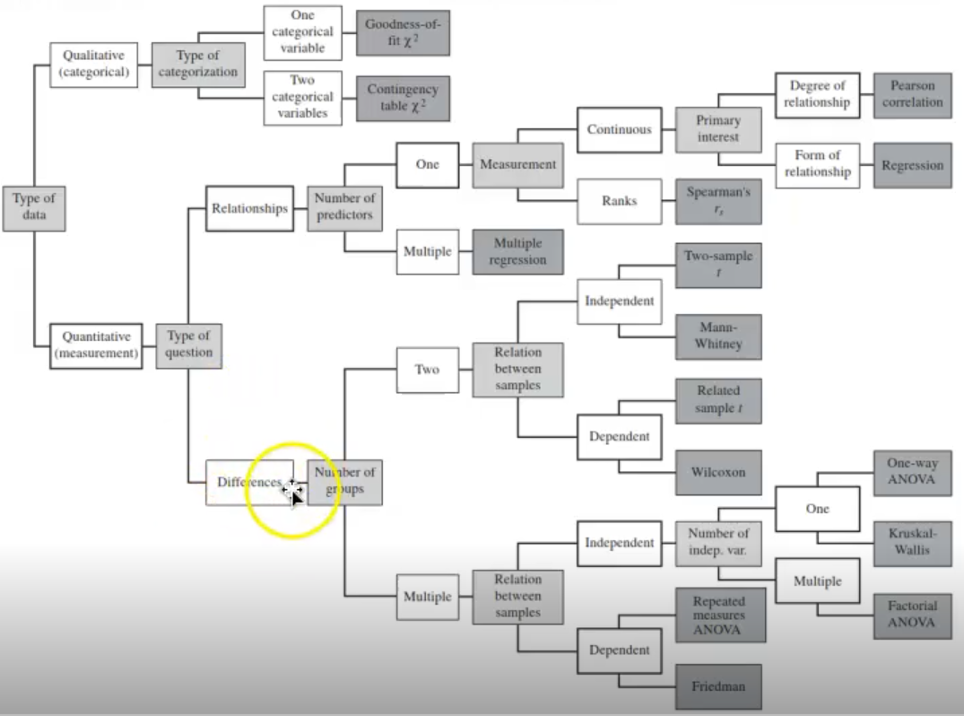
7.1.1 Parametrinen vs. ei-parametrinen testi
parametrinen testi
olettaa normaalisti jakautuneen aineiston
otoksen perusteella estimoidaan populaation parametreja ja niiden luottamusvälejä
enemmän tilastollista voimaa
varmemmin löytää eron, jos sellainen todellisuudessa on
voi tehdä monimutkaisemman tilastoanalyysin
- esim. multiple regression
ei-parametrinen testi
ei tee oletuksia aineiston jakaumista; voi soveltaa melkein mihin vain aineistoon
usein riittää, että saamme selville eron/yhteyden tilastollisen merkitsevyyden
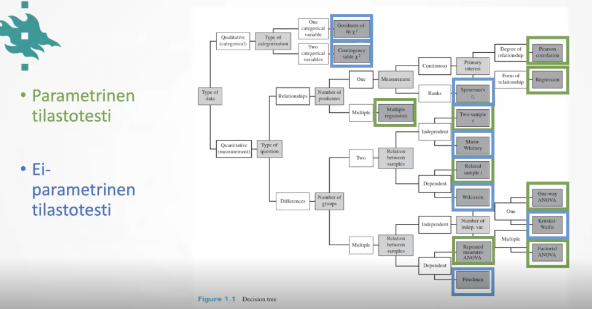
7.1.2 Kategoriset muuttujat – tee Chi square testi
yksi kategorinen muuttuja -> ovatko lukumäärät samanlaisia/odotuksenmukaisia eri kategorioissa -> x2 goodness of fit
- esim. onko potilaiden ja kontrollien määrä sama? onko eri ikäryhmien koko samanlainen?
kaksi tai useampi kategorinen muuttuja -> ovatko lukumäärät eri kategorioissa odotuksenmukaisessa yhteydessä toisiinsa -> x2 test of association
efektikoko Cramer’s V
esim. onko eri asuinalueilla samanlainen koulutustaso? Onko eri ikäryhmissä saman verran eri interventioihin osallistuneita?
testit ei parametrisiä, jakaumavapaita, ei oletuksia
visualisoi tulokset palkki/bar kuvalla
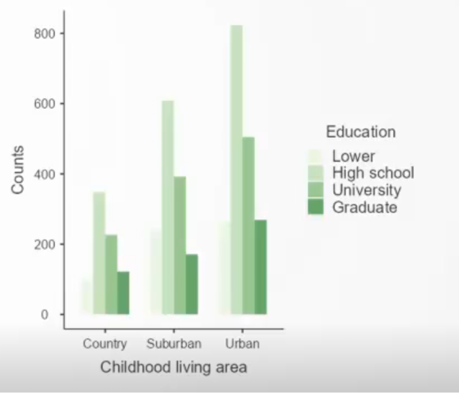
Onko jokaisella asuinalueella eri koulutustasojen jakauma samanlainen?
7.1.3 Yksi jatkuva muuttuja – yksi keskiarvo -> tee yhden otoksen t-testi
Yksi ryhmä ja yksi muuttuja, poikkeaako keskiarvo nollasta tai jostain tietystä arvosta -> One sample T-test
Studentin t-testi
efektikoko Cohenin d
Oletuksena muuttujan normaalijakautuneisuus
Shapiro-Wilk testi, jos pieni N
Kolmogorov-Smirnov testi, jos on iso N
Q-Q-plot, histogrammi
Voi laskea myös Bayes faktorin
Jos normaalisuusoletus ei täyty niin tee ei-parametrinen Wilcoxon rank-testi
- efektikoko Rank biserial correlation
7.1.4 Yksi jatkuva muuttuja – between subjects – kahden rymän keskiarvojen ero -> tee riippumattomien otoksien t-testi
kaksi ryhmää ja yksi muuttuja, poikkeaako ryhmien keskiarvot toisistaan Independent samples t-test
Studentin t-testi
efektikoko Cohenin d
Oletuksena muuttujan normaalijakautuneisuus
Shapiro-Wilk testi, jos pieni N
Kolmogorov-Smirnov testi, jos on iso N
Q-Q-plot, histogrammi
Oletuksena ryhmien homogeenisuus
eli, että ryhmissä on samantasoinen varianssi
Levenen testi
Voi laskea myös Bayes Faktorin
Jos homogeenisuus oletus ei täyty, tee Welchin -testi
Tai tee aina Welchin testi
toimii vaikka homogeenisuusoletus täyttyisi eli voi käyttää aina
Jos normaaliusoletus ei täyty, niin tee ei-parametrinen Mann Whitney U-testi
- efektikoko Rank biserial correlation
Visualisoi tulokset, keskiarvo JA keskiarvon keskivirhe tai luottamusväli
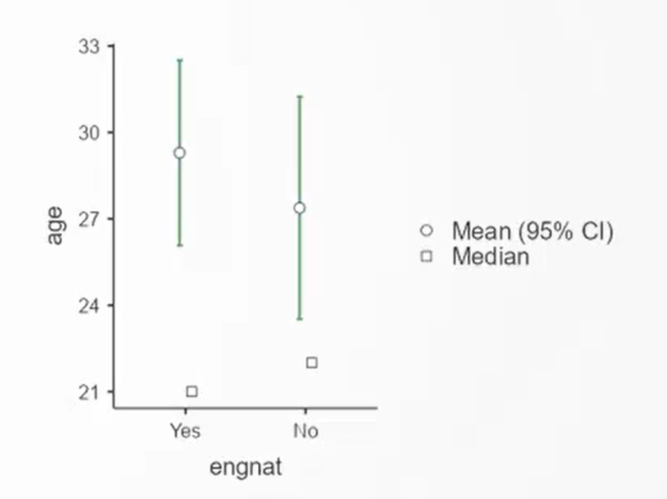
7.1.5 Jatkuva muuttuja – within subjects – kahden tilanteen keskiarvojen ero -> tee riippuvien otosten t-testi
yksi ryhmä, yksi mitattu asia, kaksi koetilannetta, poikkeaako koetilanteiden keskiarvot toisistaan Paired samples T-test
Studentin t-testi
efektikoko Cohenin d
Oletuksena muuttujan normaalijakautuneisuus
Shapiro-Wilk testi, jos pieni N
Kolmogorov-Smirnov testi, jos on iso N
Q-Q-plot, histogrammi
Voi laskea myös Bayes Faktorin
Jos normaalisuusoletus ei täyty niin tee ei-parametrinen Wilcoxon rank-testi
- efektikoko Rank biserial correlation
Visualisoi tulokset, keskiarvo JA keskiarvon keskivirhe tai luottamusväli
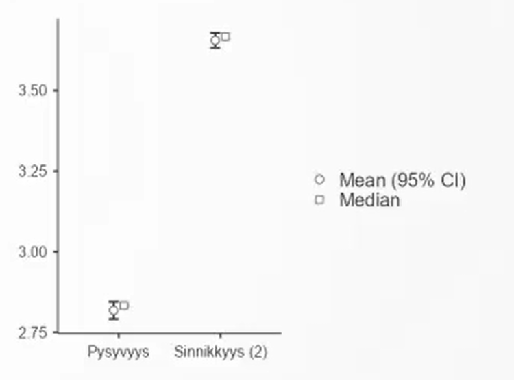
7.1.6 Kaksi jatkuvaa muuttujaa – within subjects – kahden muuttujan yhteys -> Laske korrelaatio
Yksi ryhmä, kaksi muuttujaa, ovatko muuttujat yhteydessä toisiinsa Correlation
jos muuttujilla lineaarinen yhteys, laske Pearson
- Arvioi scatter-plotin perusteella
Jos muuttujilla monotoninen yhteys, laske Spearman
- Ei-parametrinen testi, ei tee oletuksia, perustuu järjestykseen (rank)
Korrelaatio itsessään efektikoko
Visualisoi tulokset scatterplotilla
- Lisää regressiosuora ja hajonta/keskivirhe/luottamusväli
7.1.7 Kaksi jatkuvaa muuttujaa – within subjects – kahden muuttujan yhteys -> laske regressio
yksi ryhmä, kaksi muuttujaa, ennustaako ensimmäinen muuttuja toista muuttujaa -> linear regression
R2 selitysosuus kertoo ilmiön voimakkuudesta (efektikoko)
muut mittarit: adjusted R2, AIC, BIC, RMSE, toimivat vain kun on useampia ennustajia / malleja
Oletukset
ei residuaalien autokorrelaatiota, Durbin-Watson autocorrelation testi
Ei muuttujien kollineaarisuutta, Collinearity test
Residuaalien normaalijakautuneisuus
Shapiro-Wilk testi, jos pieni N
Kolmogorov-Smirnov testi, jos on iso N
Q-Q-plot, histogrammi
Visualisoi tulokset scatterplotilla
- Lisää regressiosuora ja hajonta/keskivirhe/luottamusväli
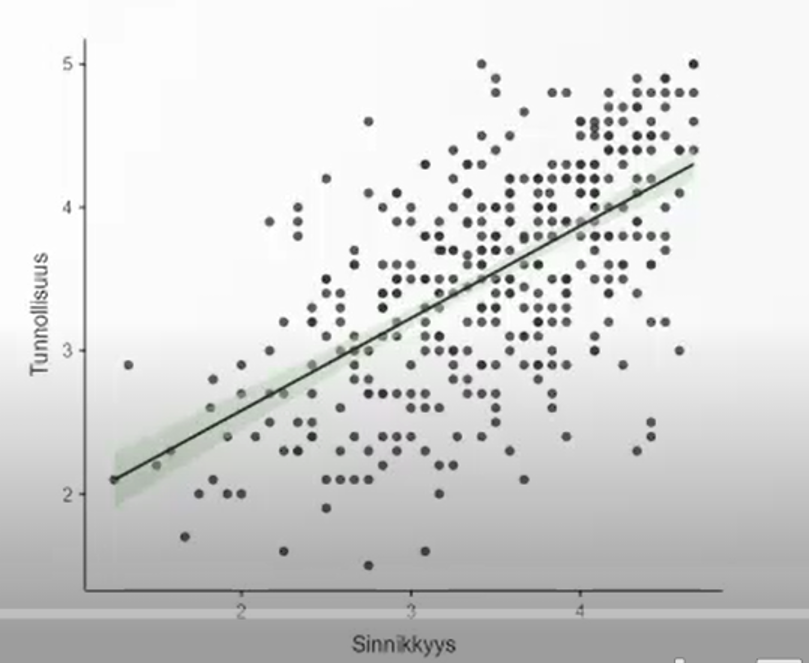
7.1.8 Enemmän kuin 2 muuttujaa
Correlation matrix
lisää niin monta jatkuvaa muuttujaa, kuin haluat
Jos paljon korrelaatioita, kuva parempi kuin taulukko
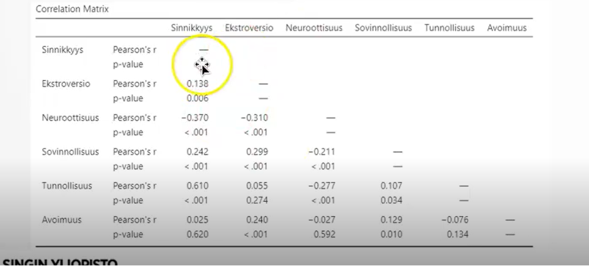
Korrelaatiomatriisi
7.1.9 Enemmän kuin 2 muuttujaa ja muuttujien kontrollointi (adjustointi)
Partial correlation
- testaa muuttujien välistä yhteyttä samalla kun kontrolloit muiden muuttujien vaikutuksen
Multiple linear regression
lisää niin monta muuttujaa kuin haluat
- ota huomioon ennustettavien muuttujien määrä, N, tilastollinen voima
Voit lisätä jatkuvia muuttujia ja myös kategorisia muuttujia (dummy koodattuina)
joko between tai within subjects
Jokaisen muuttujan itsenäinen vaikutus, muiden muuttujien vaikutus kontrolloituu
Lisää muuttujia asteittain hierarkisesti (blocks), vertaile malleja
- adjusted R2, AIC, BIC, RMSE
7.1.10 Keskiarvojen ero kun enemmän kuin 2 ryhmää tai 2 koetilannetta
Oletukset
Oletuksena muuttujan normaalijakautuneisuus
Shapiro-Wilk testi, jos pieni N
Kolmogorov-Smirnov testi, jos on iso N
Q-Q-plot, histogrammi
Oletuksena ryhmien homogeenisuus
eli, että ryhmissä on samantasoinen varianssi
Levenen testi
Vain between subjects – ryhmiä 2 tai enemmän
yksi ennustava (riippumaton) muuttuja -> one-way ANOVA
- jos normaaliusoletus ei täyty niin tee ei parametrinen Kruskal-Wallis
kaksi tai useampia ennustavia (riippumattomia) muuttujia -> ANOVA (factorial)
Lisäksi kontrolloi häiriömuuttuja -> ANCOVA
within subjects – koetilanteita 2 tai enemmän
Yksi tai useampi ennustaja -> Repeated measures ANOVA
- jos normaaliusoletus ei täyty, tee ei-parametrinen Friedman Repeated Measures ANOVA
Ennustavat muuttujat joko within tai between subjects
7.1.11 Tilastotestien yhteyksiä toisiinsa
kahden muuttujan välinen regressio vs. korrelaatio
- käytännössä sama asia, regressio -> scatterplot-kuva suoran kulmakerroin
Kahden ryhmän ero; t-testi vs. ANOVA -> sama asia
GLM = general linear model
inear regression
multiple regression
ANOVA
7.1.12 Taustaoletukset
useat parametriset testit olettavat, että aineisto/muuttujat noudattavat suunnilleen normaalijakaumaa
- normaalijakaumaoletus ei aina kriittinen
käytännössä tilastotesteissä aina mukana useita muuttujia, tärkeintä silloin on residuaalien normaalijakautuneisuus – yksittäinen muuttuja voi poiketa normaalijakautuneisuudesta
Testien taustaoletukset testaus jamovissa aina assumption checks
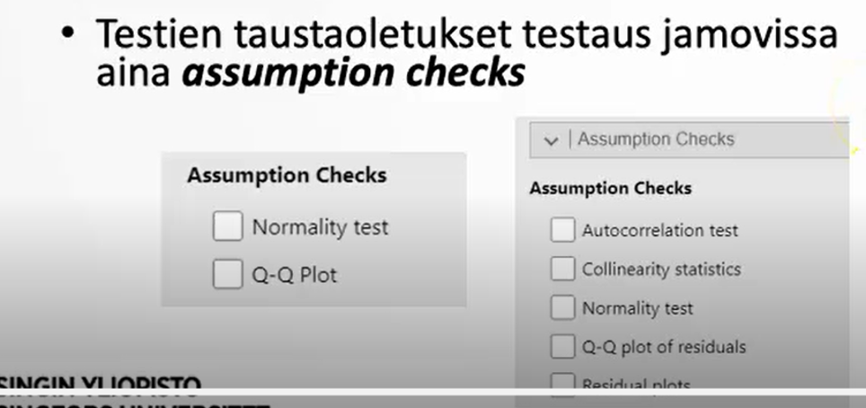
Taustaoletukset
mitä tehdä, kun oletukset eivät täyty?
Muuttujamuunnos
Vaihto ei-parametrisiin testeihin
Oletuksen tarkastelu toisella tapaa
Esim. Jos shapiro-wilk/kolmogorov-smirnov -testi merkitsevä, muuttuja ei normaali
tee testit ja raportoi kaikki mitä teit ja perustele valinta (miksi rikoit normaalisuusoletusta) ja pohdi sen vaikutusta)
Jos on epävarma, niin parempi tehdä vähemmän oletuksia, eli käyttää ei-parametrista testiä
jos muuttujien välillä on aito ja voimakas yhteys niin tulee näkyviin sekä parametrisillä että ei-parametrisillä testeillä
ei-parametrisia testejä saa käyttää vaikka olisi normaalisti jakautuneet muuttujat; testin ero tilastollisessa voimassa
7.1.13 Poikkeavat havainnot
aineiston tarkastelun jälkeen poikkeavien havaintojen poisto tarvittaessa; usein ei tarvitse poistaa kuin selkeästi virheelliset arvot
Q-Q-plot
Mean +/- X*sd
Median +/- X*mad
Trim, X% pienimmät / suurimmat arvot
Tilastotestin jälkeen, Q-Q-plotin tarkastelu, havaintojen poisto tarvittaessa
- lineaarinen regressio -_> Cook’s distance kertoo kuinka paljon yksittäinen havainto vaikuttaa tulokseen (talleta cook distances visualisoi scatter plotilla)
Aineistoa ei saisi poistaa liikaa, poikkeavat havainnot yksittäisiä, koko aineistosta korkeintaan muutama prosentti
- virheelliset arvot ainoat, jotka täytyy aina poistaa
Aineiston käsittelyvaiheiden vaikutus
Testin valinta, poikkeavat havainnot, muuttujamuunnokset yms. vaikuttavat tulokseen
Aina pitää tehdä valintoja/korjauksia/muunnoksia, kaikki tutkijat tekevät niitä, tärkeää on
tiedostaa, että valinnat vaikuttavat lopputulokseen
selkeät kriteerit/perusteet valinnoille
valintojen tarkka raportointi
Testitulosten raportointi ja tulkinta
Tulokset
keskiarvojen ero, suunta
muuttujien välinen yhteys
P-arvo, tilastollinen merkitsevyys
Efektikoko, selitysosuus
Pohdinta
tuloksen merkityksellisyys, uutuus, odotustenmukaisuus jne.
Tehtyjen valintojen vaikutus
Yksinkertainen usein hyvä
Parempi tehdä yksinkertainen analyysi, jonka ymmärtää ja osaa, kuin monimutkainen analyysi, jota ei osaa tai ymmärrä miten se toimii
- parempi tehdä yksinkertaiset analyysit oikein ja kattavasti, kuin monimutkaiset analyysit väärin tai puutteellisesti
Tilastoanalyyseja voi tehdä myös kahdessa vaiheessa: ensin adjustointi/mallinnus sitten tilastotesti – kaksi yksinkertaista tilastotestiä yhden monimutkaisen sijaan
esim. fMRI ensin jokaiselle koehenkilölle oma regressioanalyysi, sitten t-testi onko kaikilla koehenkilöillä samanlaiset regression beta-kertoimet
kontrolli ja koeryhmä, ikä vaihtelee, ensin adjustoidaan muuttujan arvot iän mukaan ja poistetaan iän vaikutus, sitten tehdään t-testi
7.2 Tilastollisen aineistonkäsittelyn vaiheet
Tutkimuksen ja tilasto
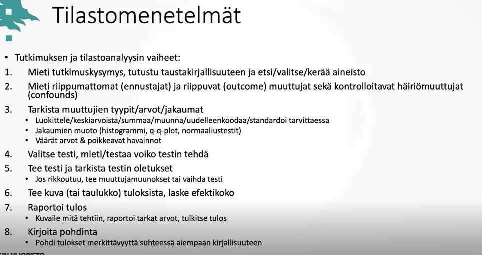
tilastotestin teko ja oletusten tarkistus
kuva kannattava, koska ihmiset lukevat niitä helpommin kuin taulukoita
efektikoon laskeminen tärkeää
tulosten raportointi ja tulkinta
7.3 Chi square testit
X2 testi
kategorisen datan frekvenssien arviointi
jos riippuva muuttuja on kategorinen, lähes aina tehdään x2 testi
tai logistinen regressio
verrataan odotettuja ja havaittuja frekvenssejä toisiinsa
- esim. onko sukupuoli edustettuna samalla tavalla kaikissa ikäryhmissä? Tai onko eri ryhmät samalla tavalla kouluttautuneita=
Ristiintaulukointi
- Contingency tables
Chi-square goodness of fit
yhteensopivuustesti
yksittäinen muuttuja
Chi-square test of association
riippumattomuustesti
useampi muuttuja
tehdään taulukointi
Ei parametrinen testi eli ei taustaoletuksia muuttujasta
perustuu frekvensseihin
testisuure X2
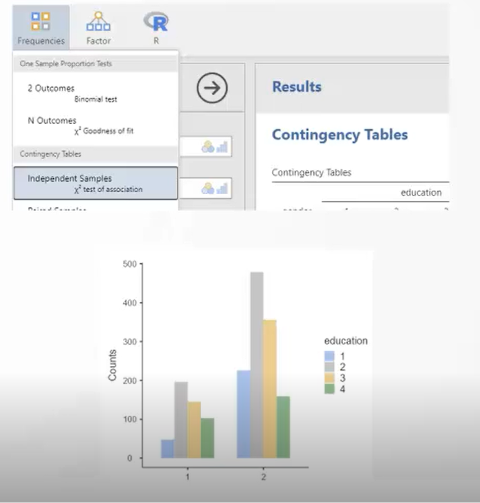
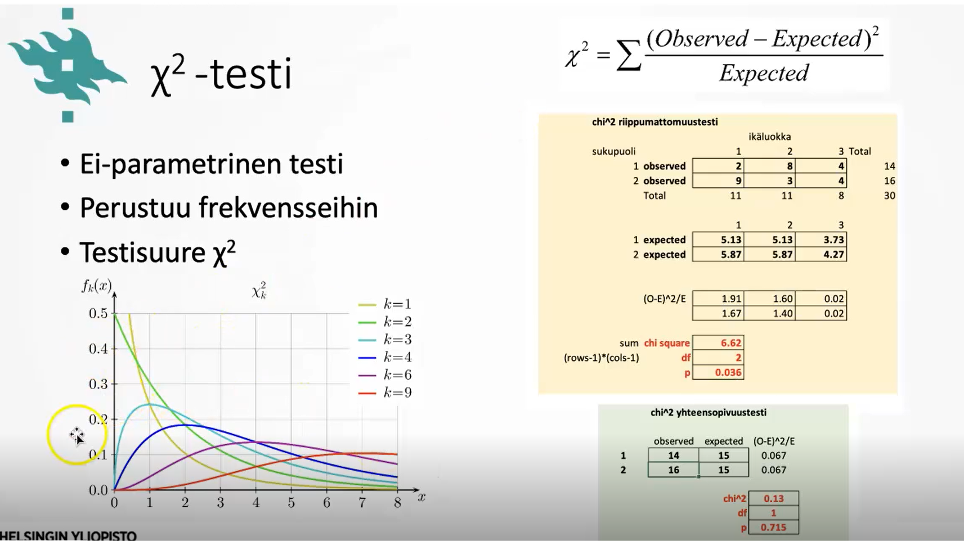
7.3.1 Chi-toiseen riippumattomuustesti
pienemmillä vapausasteilla jyrkempi, kun vapausasteet kasvaa muoto liikkuu kohti suurempia arvoja
kun saadaan testisuurearvo, etsitään kuvaajasta p-arvo testisuureelle
1. taulukkoon havaitut määrät
2. taulukkoon odotetut määrät
asketaan: kokonaismäärät kerrottuna keskenään ja jaettuna koko aineiston koolla
Odotettu määrä -> 11 (1. ikäluokan kokonaismäärä) * (1. sukupuolen kokonaismäärä) 14 / 30 (koko aineiston koko) = 5,13
Kun saatu odotetut määrät laskettua lasketaan havaittujen ja odotettujen määrien erotus, korotetaan se toiseen ja jaetaan se odotetulla määrällä. Tämä tehdään joka kohdalle ja niistä lasketaan summa.
1. sukupuolen 1. ikäluokka,
(2 – 5,13)2/5,13 = 1,91
(Havaittu arvo – odotettu arvo)2 / Odotettu arvo tehdään kaikille ja summataan ne yhteen saadaan chi square testisuure
df =lasketaan riippumattomuustestistä (rivien määrä – 1) * (sarakkeiden määrä – 1)
kuvassa -> rivit 2-1 = 1, sarakkeet 3-1 = 2, eli 2 * 1 = 2
vapausaste, df = 2
kuvasta voidaan katsoa vapausasteen 2 eli vihreältä kuvaajalta testisuurearvon 6,62 kohdalta p-arvon suuruus
- p-arvo vain 0,036 ja siis tilastollisesti merkitsevä mikä tarkoittaa, että sukupuolet eivät ole jakautuneet samalla tavalla eri ikäluokissa. Eli nollahypoteesin hylkäys tarkoitti sitä, että jakaumissa on eroa.
7.3.2 Yhteensopivuustesti
jos otoksessa 14 naista ja 16 miestä, jos haluttaisiin saman verran miehiä ja naisia odotettu määrä 15
lasketaan (havaittu – odotettu)*toiseen / odotettu = 0,067
lasketaan summa 0,067 + 0,067 = 0,13
df, vapausaste = 1
p yli 0,05, eli ei merkitsevä ja nollahypoteesi jää voimaan, joten voidaan todeta, että ryhmien välillä ei ole eroa
7.3.3 Miten tehdään jamovissa?
Goodness of fit
- bugi jamovissa, kuvittelee, että on arvoja 0 ja 3 vaikka ne olisi merkitty puuttuviksi
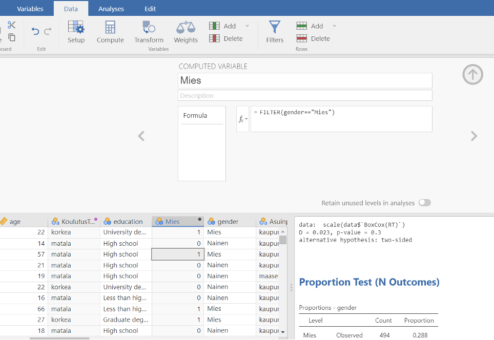
voidaan korjata tekemällä uusi dikotominen muuttuja
- polku: computed variable function FILTER(gender==”Mies”)
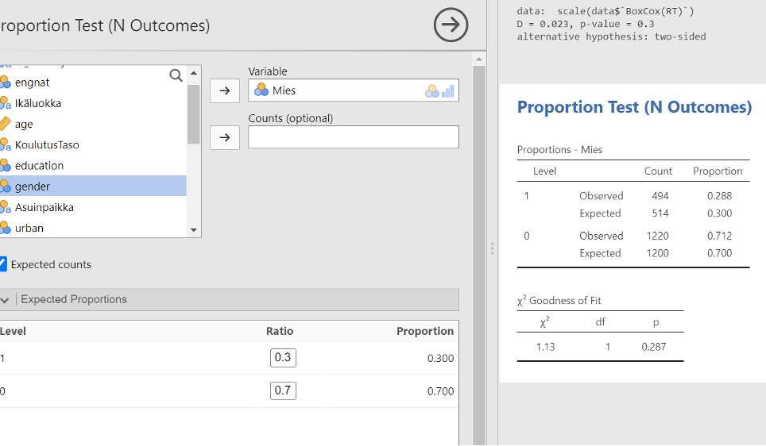
jos lisää tietoa, niin ratio kohtaan voidaan tehdä muutoksia, joka muuttaa odotettuja lukumääriä
esim. videolla, että vain 30% miehistä vastasi kyselyyn ja 70% naisisista
vaatii vahvaa teoreettista perustelua
Goodness of fit vastasi kysymykseen miten hyvin havaittu aineisto noudattaa odotettua jakaumaa
Chi-square test of association, riippumattomuustesti
ei bugia jamovissa eli toimii suoraan alkuperäisillä muuttujilla
alla kuvasta näkee odotetut ja havaitut lukumäärät
high school ja university luokissa ne ovat suht samat, mutta alle high school ja graduate tasoilla eroja havaituissa ja odotetuissa
tilastotestin p-arvona alle 0,05 eli nollahypoteesi hylätään, mikä tarkoittaa että luokat ovat jakautuneet eri tavalla luokkiin. Eli sukupuolet ovat jakautuneet eri tavoin eri koulutustasoille. Jos testistä tulisi yli 0,05 p-arvona se tarkoittaisi, että jakautuminen on samanlaista.
jos aineistosta löytyy solu, jossa hyvin pieni lukumäärä tai nolla niin sitä ei pysty kunnolla tekemään. Alle 5 on tällainen lukumäärä.
- continuity correctionilla pystyy kokeilla korjaamaan
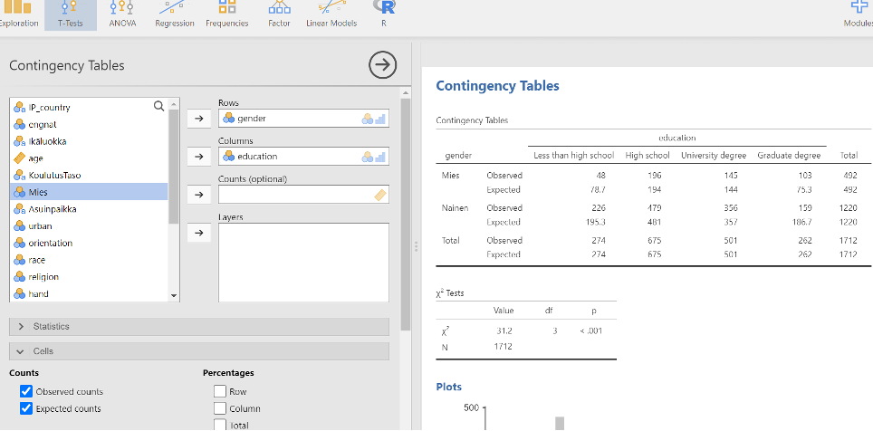
Statistics kohdasta continuity correction
Hypothesis kohdasta voi muuttaa hypoteesin suuntaa
Cramerin V, kuvaa efektikokoa (tsekkaa netistä miten lukuarvoa tulkitaan)
- 1 ja 0 välillä, kuvassa siis efektikoko suht pieni
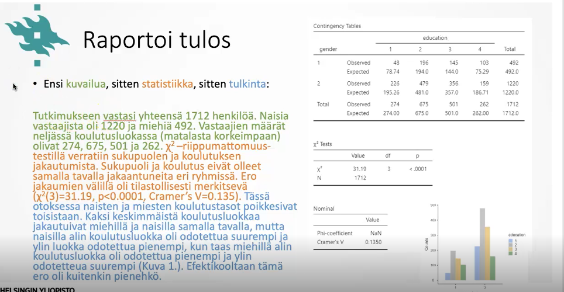
- x2 chi square testisuure, (vapausaste), p-arvo ja efektikoko
7.3.4 Chi square testi r-kielellä
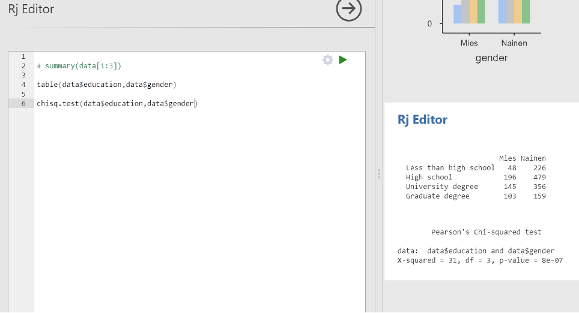
r kielellä chi-square test of association:
table(data$education,data$gender)
chisq.test(data$education,data$gender) testifunktio
R-kielellä chi-square goodness of fit testi:
summary(data$gender)
chisq.test( c(494, 1220), p=c(.5,.5)) testifunktio, 494 ja 1220 ovat ryhmien lukumäärät
Chi-square excelissä
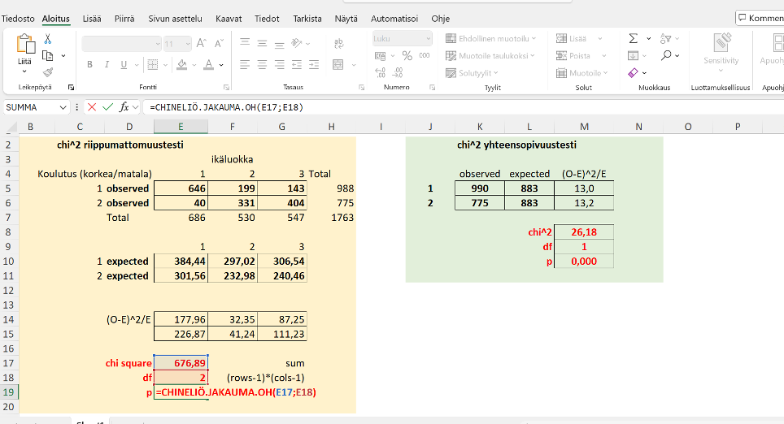
Excelissä chi-square testin p-arvo lasketaan kaavalla: CHINELIÖ.JAKAUMA.OH(x;df)
englanniksi: CHISQ.DIST.RT(x;df)
x kohdalle chi-square testisuure ja df kohdalle vapausaste
Riippumattomuustestissä odotusarvojen laskenta
sarakkeen summa * rivin summa / kaikkien summalla
esim. sarake 1 ja rivi 1
686*998 / 1763 =
tehdään kaikille soluille
sitten lasketaan kaikille soluille
Linkki exceltiedostoon
Chi-square testin nollahypoteesi:
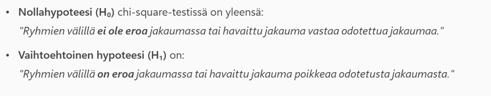
eli, jos p-arvo on merkitsevä (<0.05) ryhmien välillä on eroa tai havaittu jakauma poikkeaa odotetusta
jos taas p-arvo ei ole merkitsevä (>0.05) ryhmien välillä ei ole eroa, tai havaittu jakauma vastaa odotettua.
7.4 T-testit
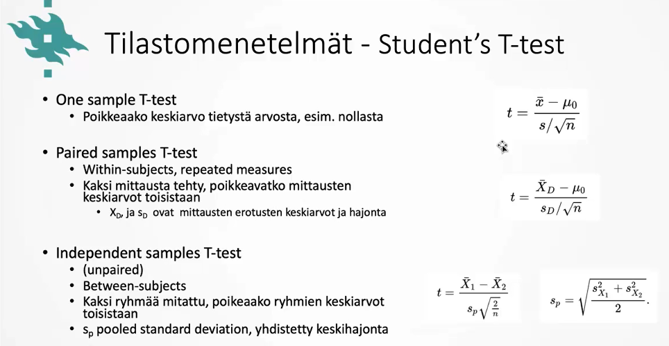
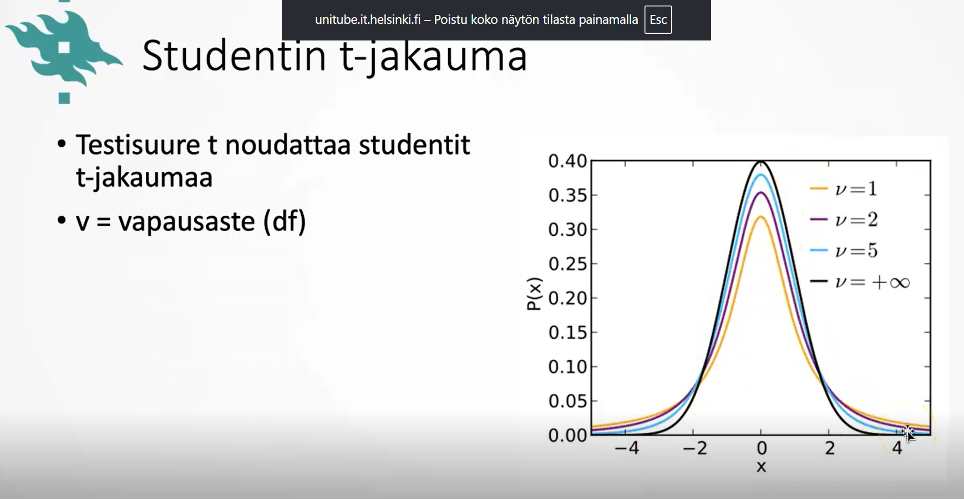
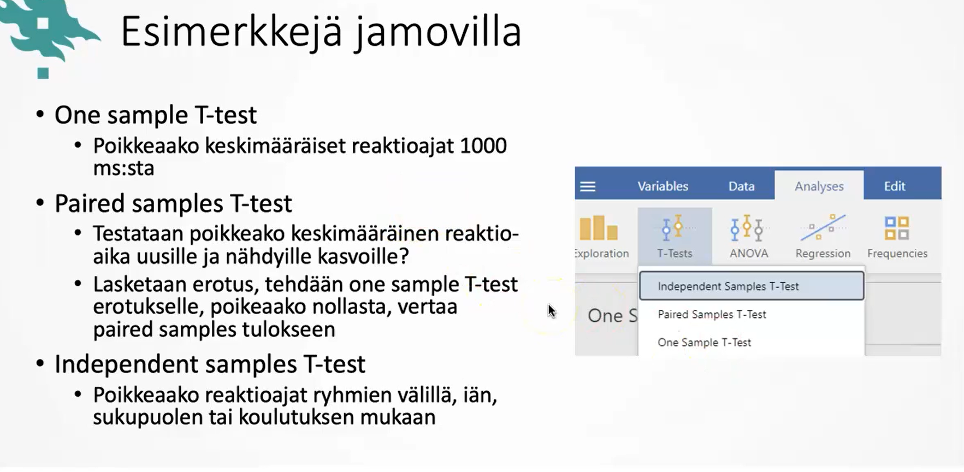
7.4.1 One sample T-test jamovissa
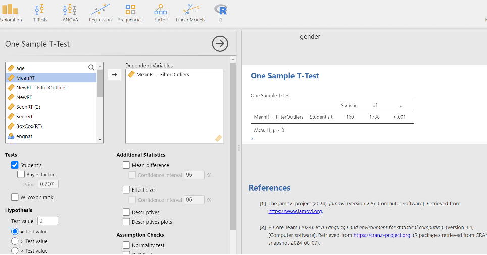
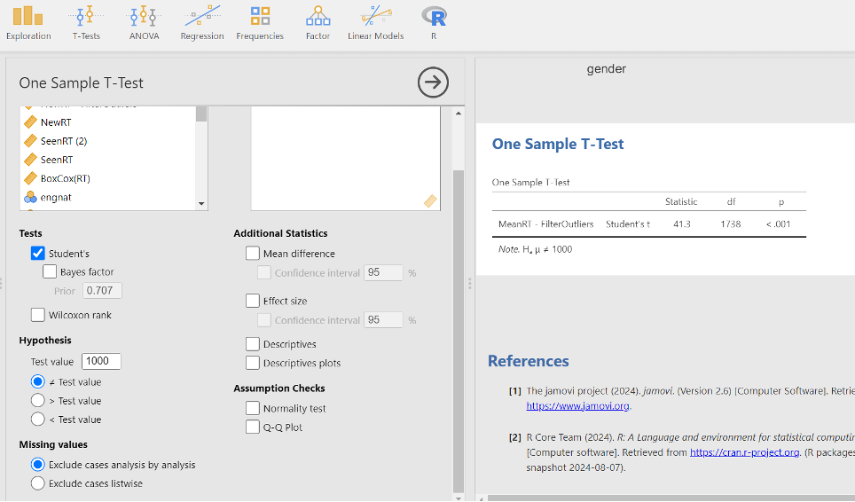
tässä kuvassa test valuena 0, alhaalla voi valita sen, jos testataan useampaa muuttujaa ja jossakin on puuttuvia arvoja niin poistetaanko silloin muuttuja kaikista analyyseistä vai vain siitä, josta se puuttuu
Testin tulkinta
statistic tarkoittaa t-arvoa eli testisuuretta
df tarkoittaa vapausastetta
p- arvo on p-arvo
esim. toisessa kuvassa testisuure t-arvo on 41,3, joka on hyvin suuri arvo, mikä tarkoittaa, että muuttujan keskiarvo poikkeaa paljon 1000 millisekunnista
efektikoko Cohen’s d
- kertoo montako keskihajontaa ryhmien keskiarvot eroavat toisistaan
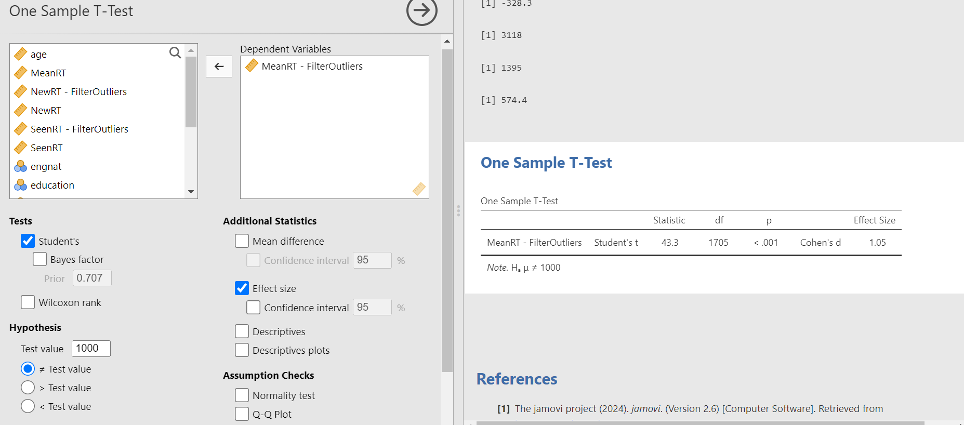
kuvassa cohen’s d on 1,05 eli vähän keskiarvojen ero on vähän yli 1 keskihajonta, mikä tulkitaan isoksi eroksi
HUOM! aiemmissa kuvissa minulla oli eri aineistoversio käytössä, joten älä ihmettele lukujen pieniä eroja
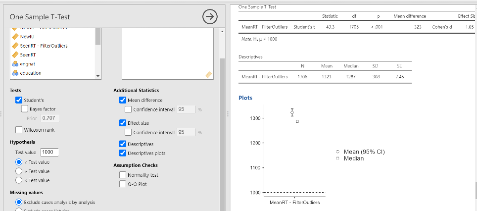
descriptivesisistä saa esille N, keskiarvon, mediaanin, keskihajonnan ja keskivirheen
descriptive plotsista kuvaajan, josta näkee keskiarvon ja sen luottamusvälit ja mihin se sijoittuu suhteessa vertailtuun arvoon
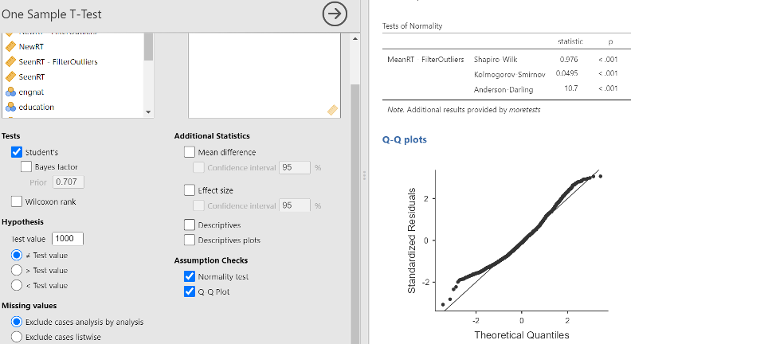
Assumption checkssaa tarkastettua noudattaako muuttujan jakauma normaalisuusoletusta
kuvassa jakauma rikkoo normaalisuusoletusta
- testien tulokset ovat p-arvoltaan merkitseviä nollahypoteesi hylätään eli vaihtoehtoinen hypoteesi astuu voimaan, joka normaalisuustesteissä on ettei jakauma ole normaalisti jakautunut
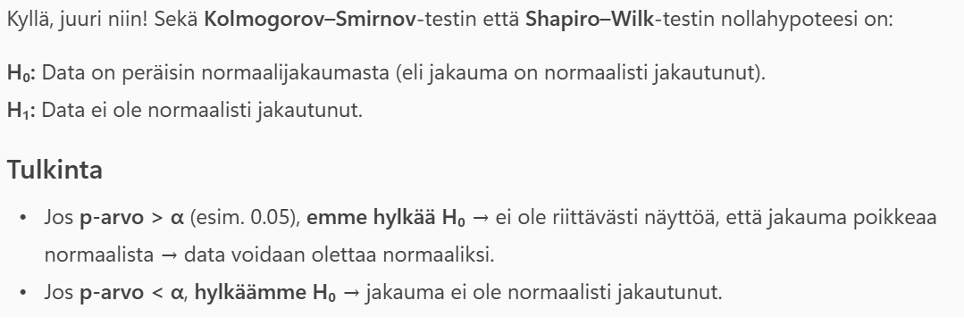
- koska muuttuja poikkeaa normaalijakaumasta pitäisi harkita muuttujamuunnosta, ei-parametrista testiä tai sitten perustella miksi pystytään silti käyttämään kyseistä testiä
Ei-parametrinen testi: Wilcoxon rank
- efektikoko: rank biserial correlation
7.4.2 Paired samples T-testi
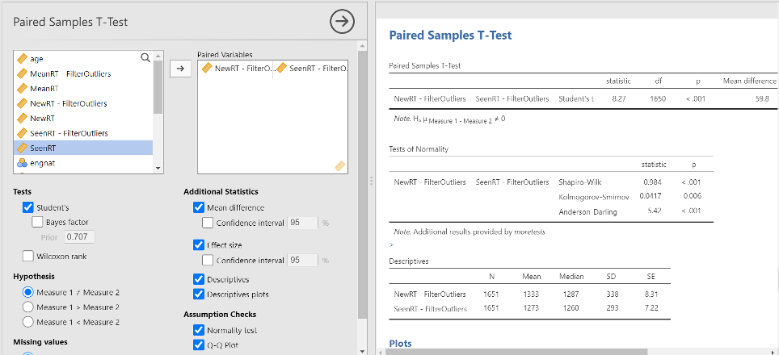
tähän pätee samat asiat asiat jamovissa kuin one sample t-testiin
tulos kertoo poikkeavatko kahden mittauskerran keskiarvot toisistaan
kuvan normaalisuusoletus rikkoutuu, joten täytyisi tehdä muuttujamuunnos, ei-parametrinen testi tai perustella miksi kuitenkin voidaan käyttää testiä
7.4.3 Independent samples T-test
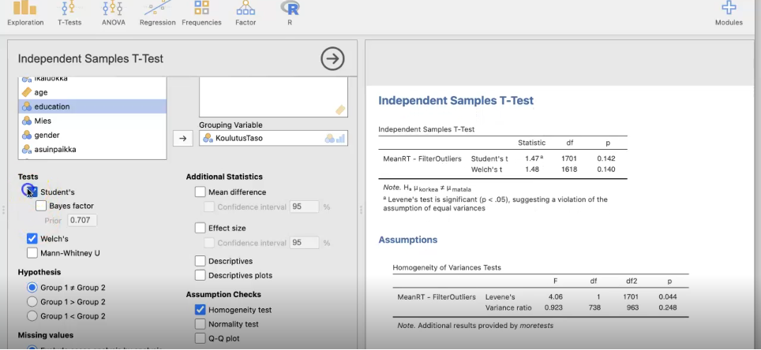
testataan homogeenisuustestillä
Levene’s testi, jos p<.05 eli merkitsevä tarkoittaa, että varianssit eivät ole samanlaiset
Levenen testin nollahypoteesi: Varianssit ovat samanlaiset
Welchin testi -> käytetään, jos varianssit ovat erilaiset
- osaa ottaa huomioon varianssien erilaisuuden
Toimii myös silloin kun varianssit ovat samanlaiset eli sen voi tehdä variansseista riippumatta. Silloin kun varianssit ovat samat se on täsmälleen samanlainen kuin Studentin t-testi
Mann-Whitney U testi ei parametrinen vaihtoehto
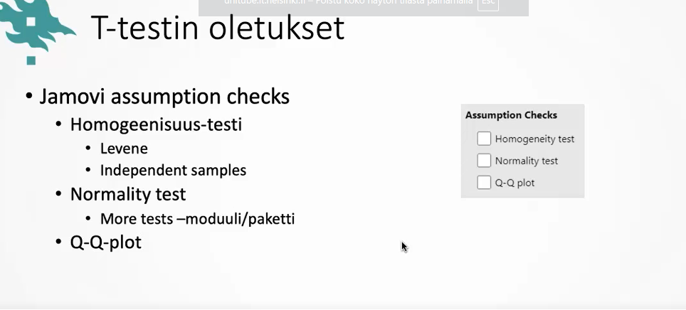
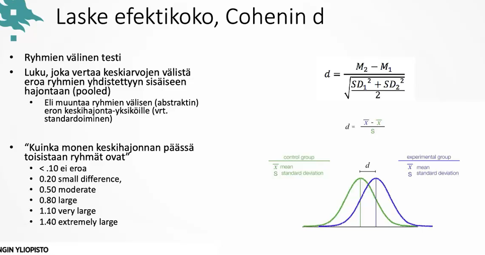
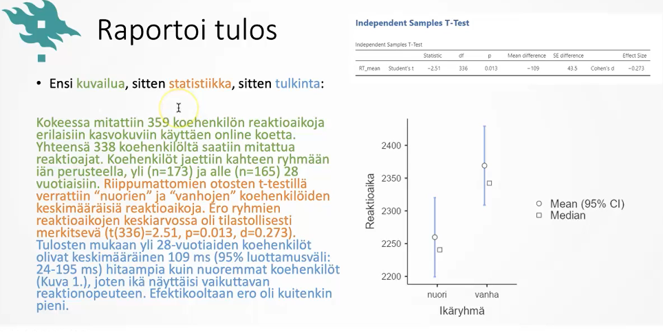
kuvaillaan ryhmät
kerrotaan testisuure, vapausasteet suluissa, p-arvo ja efektikoko
viimeiseksi tulkinta siitä mitä tulos tarkoittaa
7.4.4 Ei-parametriset testit
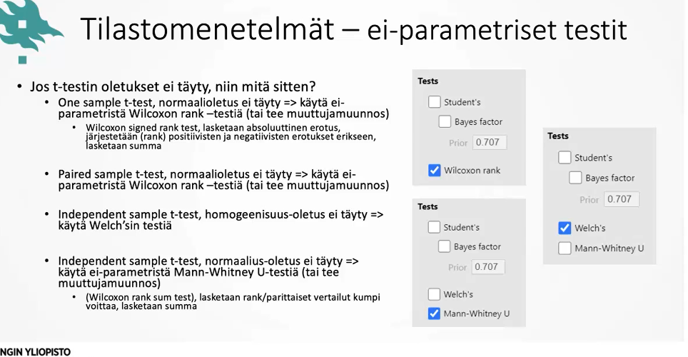
one sample, normaalisuusoletus ei täyty -> wilcoxon rank, tai muuttujamuunnos
paired sample (within subjects), normaalisuusoletus ei täyty -> wilcoxon rank tai muuttujamuunnos
independent sample (between subjects), homogeenisuusoletus ei täyty -> käytä Welch’sin testiä
independent sample (between subjects), normaalisuusoletus ei täyty -> Mann-Whitney U testi tai muuttujamuunnos
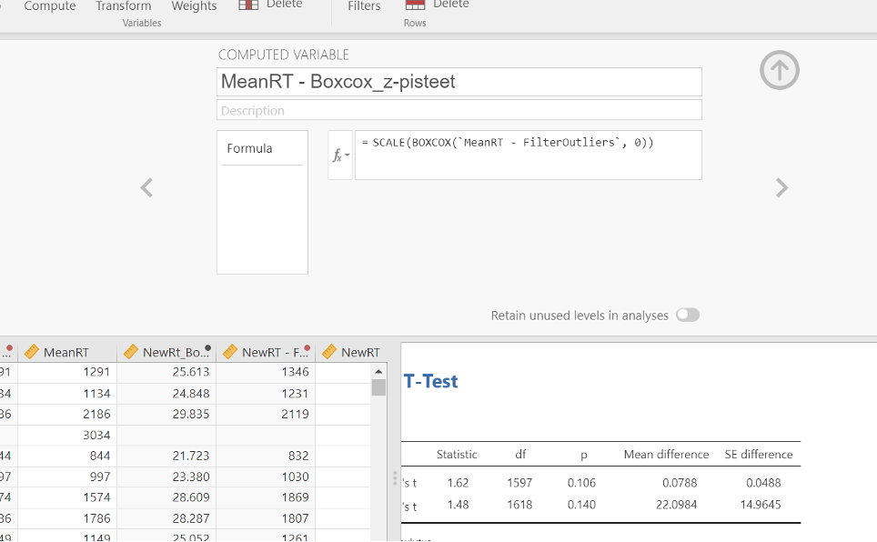
SCALE funktiolla saadaan normalisotua.
Tällöin keskiarvoero mean difference näkyy z-pisteinä
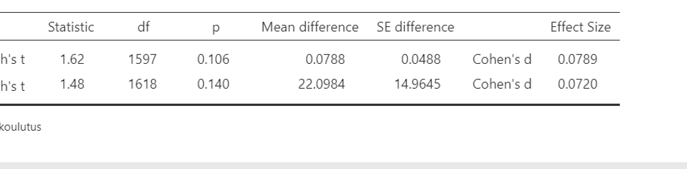
7.5 Korrelaatio
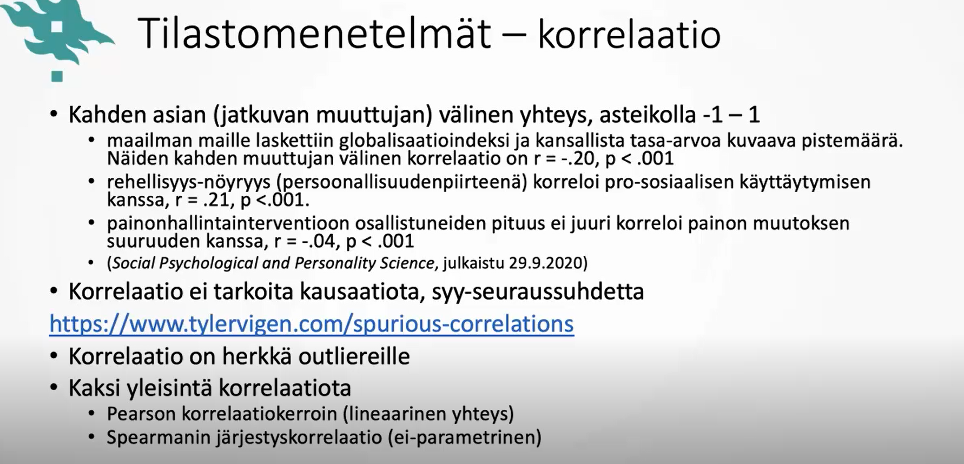
https://www.tylervigen.com/spurious-correlations
Pearson -> Lineaarinen yhteys oletuksena
Spearman -> ei-parametrinen
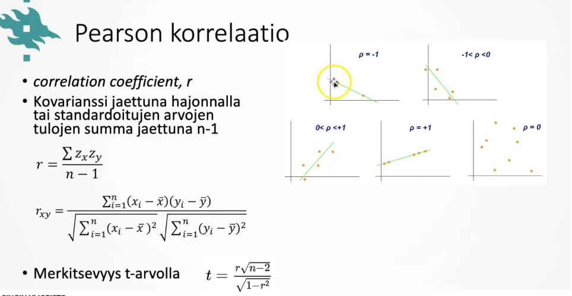
kaikki pisteet laskevalla suoralla -> korrelaatio = -1
kaikki pisteet nousevalla suoralla -> korralaatio = 1
pisteet laskevan suoran ympärillä -> korrelaatio välillä -1 < p < 0
pisteet nousevan suoran ympärillä -> korralaatio välillä 0 < p < 1
pisteet täysin hajautuneet -> korrelaatio = 0
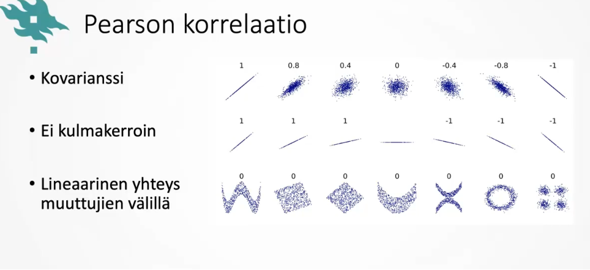
Pearsonin korrealaatio mittaa kovarianssia eli sitä vaihteleeko muuttujat samalla tavalla toistensa funktiona
ei tarkoita kulmakerrointa! keskimmäisessä kuvassa eri kulmakertoimella olevia suoria ja jokaisessa korrelaation on +1 tai -1
olettaa lineaarisen yhteyden -> alimmassa kuvassa pearsonin korrelaatiokerroin 0, koska yhteydet eivät lineaarisia
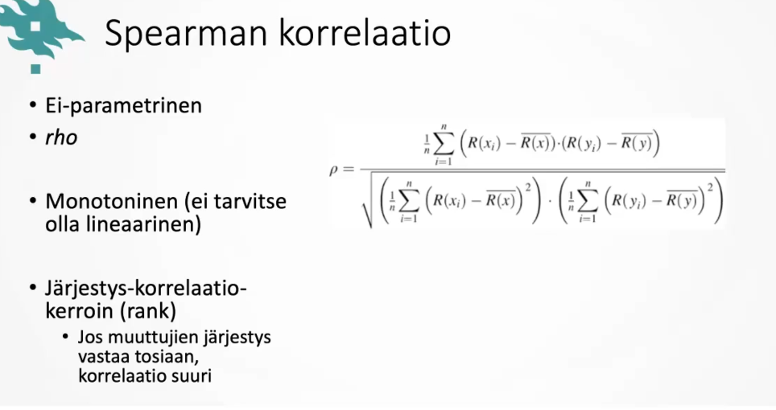
Spearmanin korrelaatio: vertailee kahden muuttujien järjestyksiä
korrelaatio iso, jos molemmat muuttujat suuria samoissa kohdissa ja pieniä samoissa kohdissa suhteessa järjestykseen
Ei-parametrinen
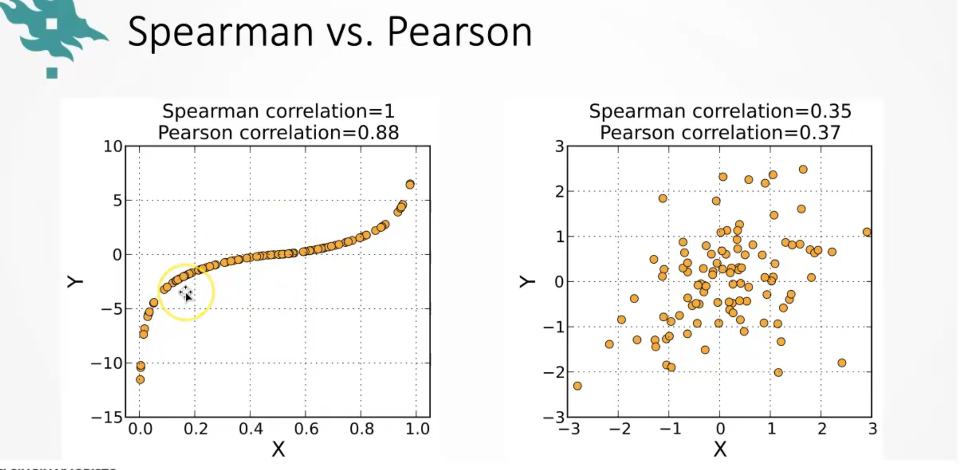
7.5.1 Korrelaatio Jamovissa
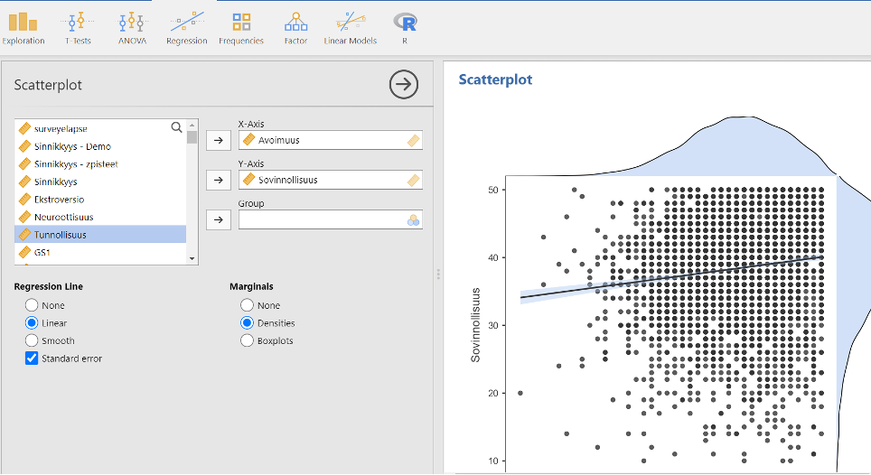
Tässä piirretty scatterplot kahdesta muuttujasta (avoimuus, sovinnollisuus)
- hiukan vaikea tulkita, koska niin paljon päällekkäisiä pisteitä ja kaikki piirretty mustiksi, joten vaikea arvioida paljonko kussakin kohdassa on vastauksia
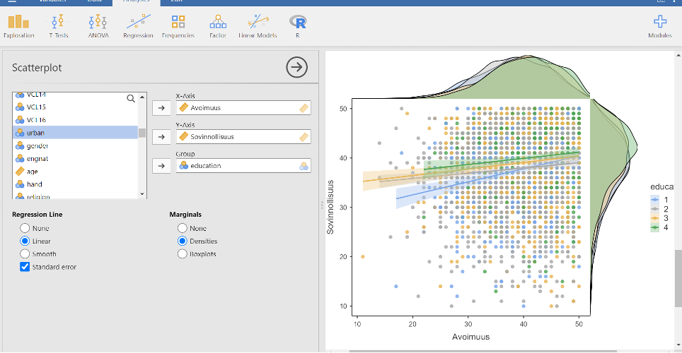
- tällä voi vertailla ja katsella olisiko jokin tausamuuttuja vaikuttava tekijä, joka täytyisi tarkistaa ja kontrolloida
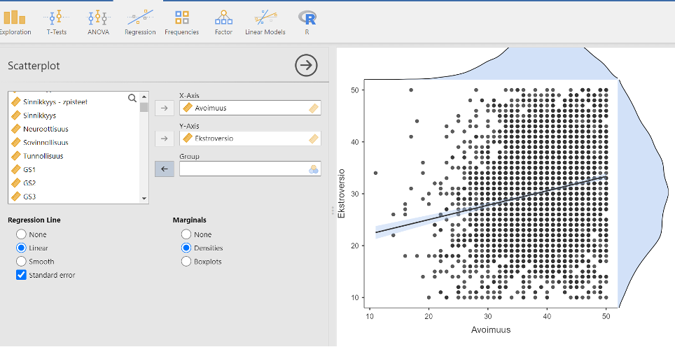
Tässä avoimuus ja ekstroversio, mitä scatterplotista nähdään on se, että muuttujien arvoilla on paljon hajontaa, joten korrelaatioiden laskeminen on ihan järkevää
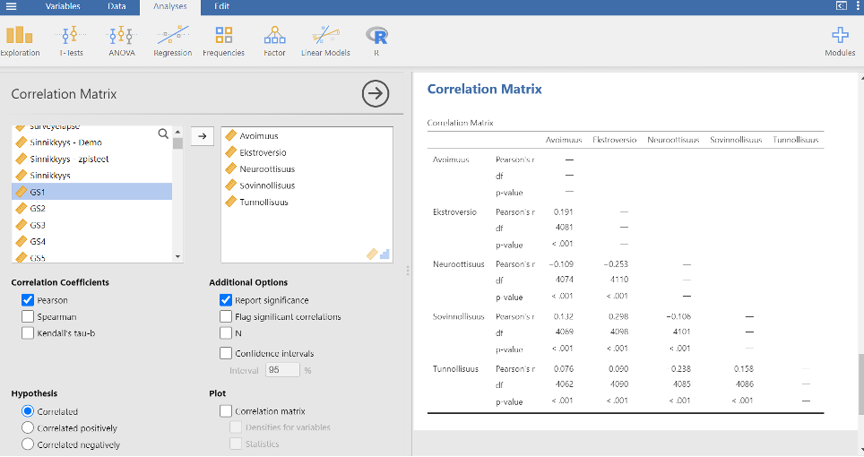
kendall’s tau-b vähän samantyylinen kuin Spearman, perustuu myös järjestykseen
taulukosta näkee korrelaatiokertoimen, vapausasteet ja p-arvon
oli paljon hajontaa, joten Pearsonin korrelaatiokertoimen käyttäminen perusteltua
taulukosta voi vertailla miten kaikki valitut muuttujat korreloivat pareissa keskenään
flag significant correlations -> merkkaa p-arvojen merkitsevyyksiä tähdillä
(kaikki ovat hyvin merkitseviä, koska ainesto suuri -> N vaikuttaa p-arvon syntyyn -> selvitä itsellesi tarkemmin miten p-arvo laskettiinkaan)
Vapausasteet df- lasketaan seuraavalla tavalla
kun kaksi muuttujaa df = N-2
esim. Ekstroversion N = 4083
vapausaste, df = 4083 – 2 = 4081
voi myös plotata
7.5.2 Partial correlation
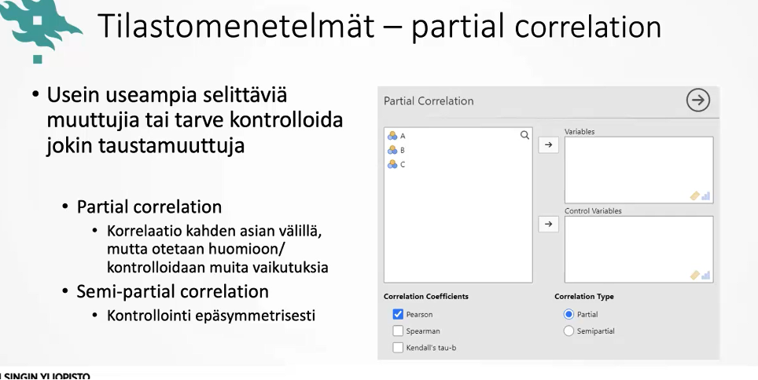
mitä taustalla tapahtuu: tehdään regressioanalyysi, jonka avulla poistetaan kontrolloitavan muuttujan vaikutus, jonka myötä pystytään laskemaan korrelaatio tarkemmin
Partial -> ottaa huomioon kontrolloitavan muuttujan vaikutuksen kaikkiin suuntiin
Semi-partial ->epäsymmetrinen eli kontrolloitavan muuttujan vaikutus otetaan huomioon vain toiseen suuntaan
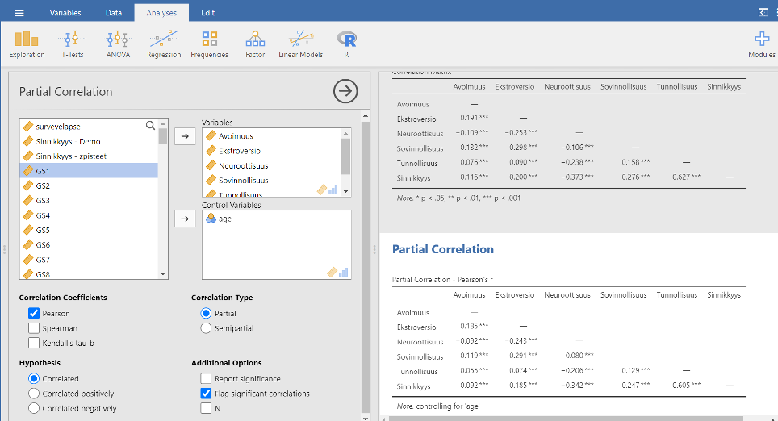
oikealla kaksi taulukkoa, ylempänä korrelaatiot ilman iän kontrollointia ja alempana ikä kontrolloituna
huomataan, että korrelaatiot heikkenivät hiukan joka kohdassa, kun iän vaikutus kontrolloitiin pois
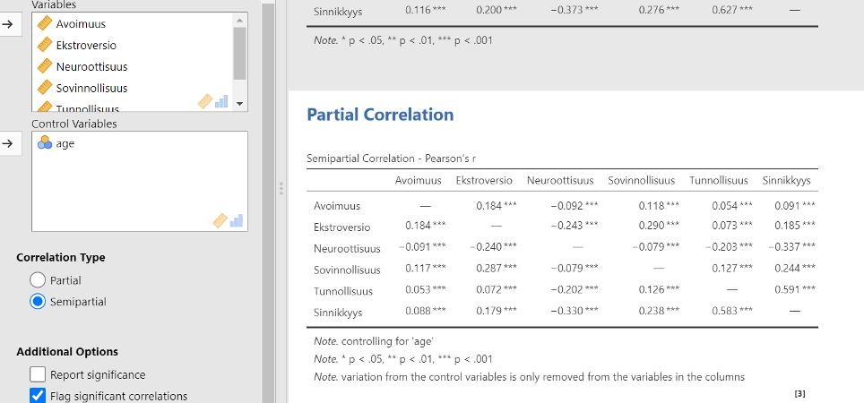
Tässä tehty semipartial correlation, tarkoittaa, että poistetaan kontrolloitavan muuttujan vaikutus vain toisesta muuttujasta. Kuvassa iän vaikutus poistettu vain sarakkeiden muuttujista.
- voi olla perusteltua käyttää esim. jos ikä on vain toisen muuttujan kannalta olennainen, mutta ei liity toiseen mitenkään
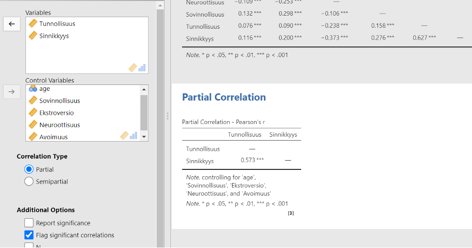
saadaan vastauksena korrelaatio, josta poistettu muiden muuttujien vaikutukset molempiin muuttujiin
huomataan, että tällöin korrelaatio on 0,573, kun ilman mitään kontrollointeja se oli 0,627 eli korrelaatio hiukan heikompi
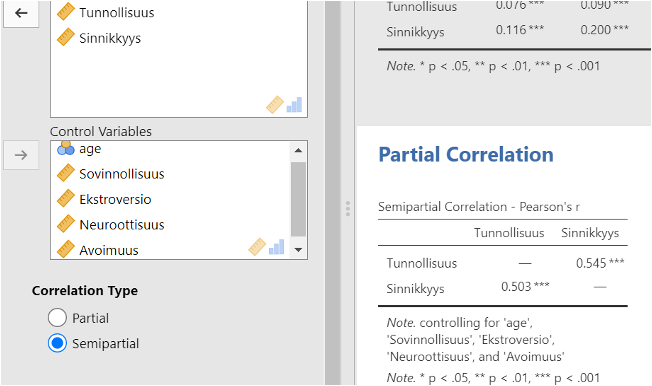
7.6 Yksinkertainen regressio. regressiosuora, excel
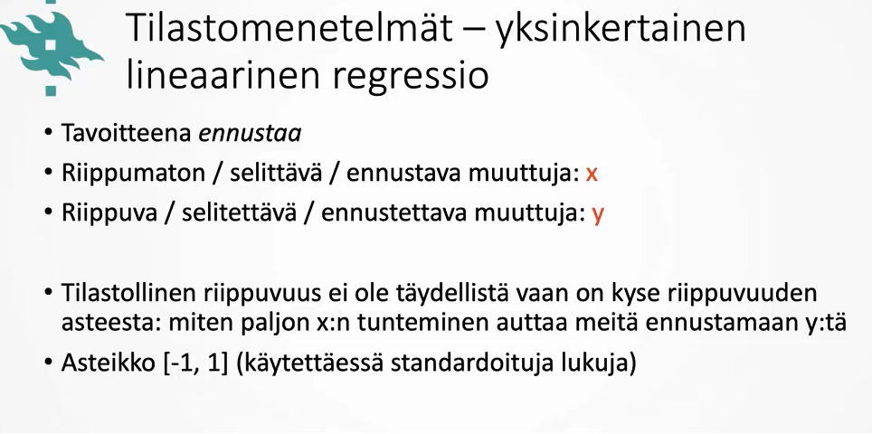
tutkitaan kuinka paljon ennustava muuttuja selittää ennustettavan muuttujan vaihtelua
painokerrointen asteikko [-1,1] käytettäessä standardoituja lukuja
y = a + bx + e
a = vakio = piste, jossa y-akseli leikataan
b = kulmakerroin, betakerroin, beta coefficient,
e = virhe (selittämättä jäävä vaihtelu), error, residuaali
- -> ero joka jää suoran ja datapisteen väliin, kuvassa punaiset viivat
Selitysaste eli kuinka hyvin malli/viiva sopii aineistoon
voidaan laskea vertaamalla residuaalien neliösummaa kokonaisneliösummaan
arvioidaan sitä, kuinka monta prosenttia jää residuaaliin eli selittämättä ja se mitä pystymme selittämään on selitysaste eli R2
- betakertoimesta eli kulmakertoimesta voi suoraan laskea kuinka suuri vaikutus on
herkkä outliereille
korrelatiivinen menetelmä eli ei kerro syy-seuraussuhteista yhtään enempää kuin korrelaatio
7.6.1 Regressiosuora excelillä
sinisessä näkyy datan oikeat arvot ja mallin ennustamat arvot tietyille x:n pisteille
SS = sum of squares = neliösumma
R2 = selitysaste
lasketaan 1-SS_residual/SS_total
eli yhdestä vähennetään residuaalien neliösumma / datan keskiarvopoikkeamien neliösummalla
SS_total = neliösumma datapisteiden poikkeamista omasta keskiarvostaan korotettuna neliöön
(data-datamean)2
esim. kun x = 1, data = 2, datan keskiarvo = 6,5
- (2 - 6,5)^2 = 20,25
Lasketaan jokaisesta x:n kohdasta (data-datamean)^2 ja summataan ne yhteen
SS_residual = neliösumma erotuksesta datan ja mallin antaman arvon välillä korotettuna toiseen
(data-malli)^2
kun x = 1, data = 2, malli = 1,45
- (2 – 1,45)^2 = 0,30
lasketaan jokaisesta x:n kohdasta (data-malli)^2 ja summataan ne yhteen
vakion ja betakertoimen selvittäminen laskemalla
betakerroin = korrelaatio * (datan keskihajonta / x:n keskihajonta)
vakio = datan keskiarvo – (betakerroin * x:n keskiarvo)
Toinen laskutapa regressiosuoran betakertoimelle ja vakiolle, jota en jaksanut opetella
7.6.2 Regressioanalyysit jamovilla
Jos enemmän muuttujia niin lisätään betakertoimia, joka muuttujalle
voidaan lisätä niin monta kuin halutaan
hiearkinen malli, monitasomalli
verrataan, miten malli paranee
dependent -> ennustettava muuttuja
covariates -> ennustava muuttuja, kun jatkuva
factors -> ennustava muuttuja, kun kategorinen
R = korrelaatio
R^2 = selitysaste, 7 % kuvassa
Estimate = mallin antamat arviot eli estimaatit?
intercept = vakio
iän betakerroin näkyy estimate sarakkeessa ikä rivillä
- kuvassa 0,201
eli jos halutaan ennustaa mallin perusteella sinnikkyyttä malli menee seuraavalla tavalla:
- vakio (33,8) + betakerroin (0,2) * ennustavan muuttujan arvo (ikä)
p- arvo, jälleen kertoo onko yhteys tilastollisesti merkitsevä
nollahypoteesi: ei ole yhteyttä
eli kun p-arvo alle 0,05 tarkoittaa, että löytyy yhteys
autocorrelation ja collinearity
- tarkistetaan, etteivät muuttujat liian samankaltaisia
Normality test ja q-q-plot
normaalisuustestit
huom! nollahypoteesi sekä wilkshapirossa että kolmogorov smirnovissa: ”on jakautunut normaalisti”
- kun p<0.05, muuttuja ei ole jakautunut normaalisti
Cook’s distance
voidaan tarkistaa, kuinka paljon mallin hyvyys muuttuu, kun yksittäinen havainto poistetaan regressiosta
maximi ehkä kiinnostavin, jos se on todella suuri voi pohtia onko kyseessä outlier ja olisiko syytä poistaa
alhaalta voi tallettaa cook’s distance arvot ja ne ilmestyvät muuttujana data sivulle
voi tehdä scatterplotin ja jos jokin arvo ihan eri skaalalla kuin muut niin voi miettiä sen poistamista
scatterplot cook’s distance arvoista ja iästä
Adjusted R^2 -> käytetään, kun useampi muuttuja. Ottaa silloin huomioon myös muut muuttujat
AIC -> Acaice informaatio kriteeri, ottaa huomioon muuttujien määrän selityksessä, arvo merkityksellinen vain, kun on useampi eri malli. Silloin pienin mahdollinen arvo tarkoittaa parasta mahdollista mallia
BIC -> Bayesilainen informaatiokriteeri, ottaa huomioon muuttujien määrän selityksessä, arvo merkityksellinen vain, kun on useampi eri malli. Silloin pienin mahdollinen arvo tarkoittaa parasta mahdollista mallia.
Overall Model Test, F-test
jos merkitsevä niin tarkoittaa, että testi läpi
onko malli ylipäänsä sopiva datalle
standardoitu estimaatti
jos useampia muuttujia voidaan arvioida niiden keskinäisiä suhteita
saadaan jonkinlainen efektikoon mitta
myös luottamusvälit katsottua standardoidulle estimaatille
Estimaatti
- tästä kohdasta varsinaiselle (ei-standardoidulle) estimaatille saadaan katsottua luottamusvälit
Lisättiin gender kategoriseksi muuttujaksi
täytyy valita reference level
se on muuttujan taso, johon verrataan, vaikuttaa tulosten tulkinnan suuntaan
kun vaihdetaan genderin referenssitaso 1 -> 2 niin betakerroin muuttuu 0,254 negatiiviseksi eli – 0,254
videolla täytyi muuttaa referenssitaso 0 -> 1, koska 0 oli merkattu puuttuviksi arvoiksi. Lisäksi poistettiin 3. taso, koska 3. sukupuolivaihtoehdon arvoja oli niin vähän ettei haluttu niitä analyysiin mukaan
Kuvasta tulkittavaa
Lisättiin education muuttuja myös selittämään
selitystaso silti matala vain noin 8,5 %
p-arvot kertovat tilastollisen merkitsevyyden mallissa
- voi olla siis eri, kuin olisi yksittäisenä
nähdään, z-pistemuunnetuista estimaateista, että iällä ja 4 tason koulutuksella on isoimmat kertoimet eli ne vaikuttavat eniten selitystasoon
Lisättiin malliin persoonallisuuspiirteet: avoimuus, ekstroversio, neuroottisuus, sovinnollisuus ja tunnollisuus
Lisättiin myös adjusted R^2 , joka ottaa huomioon muuttujien vaikutukset toisiinsa
Huomataan, että aiempien muuttujien betakertoimet ja standardoidut betakertoimet muuttuvat uusia muuttujia lisättäessä
- koska niillä on yhteistä varianssia
myös p-arvot muuttuvat
autocorrelation test
sanottiin vaan et korreloi vähän keskenään
kun p-arvo ei merkitsevä niin eivät korreloi liikaa keskenään
collienarity statistics
VIF
jos arvo 1 paikkeilla se on hyvä
jos on päälle 3 alkaa olla ongelmia
3 - 5 välillä kipuraja milloin ei voi enää käyttää
- kannattaa silloin tiputtaa se muuttuja, jolla on suurin VIF arvo ja sitten katsoa tuloksia uudestaan
Durbin-watson
Malliin lisättiin blokki, jolloin siitä tulee hierarkkinen malli
1. blokkiin jäi demografiset tekijät
2. blokkiin tuli persoonallisuuspiirteet
nyt ylhäällä näkyy 2 eri mallia ja selitysastetta
1. malli kertoo selitysasteen, kun vain 1. blokki on mukana
2. malli kertoo selitysasteen, kun lisätään mukaan 2. blokki (eli kaikki mukana)
Model comparison kohdasta näkee delta R^2 kohdasta mikä on mallien selitysasteiden ero
Model specific results kohdasta voidaan tarkastella tarkemmin
valitsemalla model 1. vain se mukana
valitsemalla model 2. modeli 1:n lisätään blokki kaks (eli kaikki mukana)
betakertoimet muuttuvat, kun enemmän muuttujia
Huomataan, että tunnollisuudella isoin standardoitu betakerroin
Lisättiin 3. blokki, johon siirrettiin muut persoonallisuuspiirteet kuin tunnollisuus eli blokki 2. jäi vain tunnollisuus. Blokki 1. jäi ennalleen eli siellä on demografiset tekijät
pelkästään demografisten tekijöiden selitysaste 8,5 %
Kun siihen lisätään tunnollisuus, selitysaste on 41,5 %
Kun vielä lisätään muut persoonallisuuspiirteet, niin selitysaste on 48,6 %
Alempaa model comparisonista nähdään:
1. ja 2. modelin selitysaste-ero on 32,89 %-yksikköä
2. ja 3. modelin selitysaste-ero 7,19 %-yksikköä
tulkinta siis mallista seuraava:
demografiset tekijät selittävät 8,5 %
tunnollisuus 32,89 % ja
muut persoonallisuuspiirteet 7,19 % vaihtelusta
Persoonallisuustekijät jaettiin omiin blokkeihinsa, jolloin voidaan tarkastella jokaisen omaa selitysosuutta
Viljami teki järjestyksessä siten, että isoimmasta betakertoimesta pienimpään, jolloin ne menevät loogisessa järjestyksessä isommasta selittäjästä pienempään
Katsotaan AIC ja BIC kriteereitä.
molemmissa pienin luku tarkoitti parasta mahdollista mallia
eli malli 5. on paras -> 6. muuttuja/blokki ei enää parantanut selitysastetta ja oli siis turha
- täsmää sen kanssa, mikä nähdään ylemmästä kuvasta, että 6. malli oli ainoa, jonka selitysaste-ero ei ollut merkitsevä
Estimated marginal means
estimoidut keskiarvot
voi vaihdella ennustavaa muuttujaa, jonka mukaan sinnikkyyden keskiarvoa ennustetaan
onnistuu kategorisilla helpommin kuin jatkuvilla
Alhaalta saa residuaalit tallennettua, joita voi käyttää mallin vakioinnissa
7.7 Logistinen regressio
- Eli tehdään logistinen regressio, kun riippuvana eli ennustettavana muuttujana on kategorinen muuttuja
Ennustettavana muuttujana dikotominen voted ja ennustavina samat kuin lineaarisessa regressioesimerkissä
p-arvoista nähdään, onko tilastollisesti merkitseviä yhteyksiä ennustettavaan muuttujaan
AIC ja BIC toimivat samalla tavalla
Assumption checkeissä on vain statistics, jossa VIF arvot toimii samalla tavalla
R^2 arvo ns. pseudo R^2 arvo, mikä tarkoittaa, että se on laskettu monimutkaisemmalla matemaattisella kaavalla, koska kyseessä kategorinen riippuva muuttuja
ROC-käyrä
7.8 Mallivakiointi / adjustointi
Poistetaan toisen muuttujan vaikutus toisesta regressioanalyysin avulla
Lineaarinen regressio, jossa sinnikkyyttä ennustetaan iällä
mallin mukaan 7,24 % sinnikkyydestä selittyy siis iällä
Residuaali eli selittämättä jäävä osuus toisin sanottuna ei siis selity iällä
Eli 92,76 % vaihtelusta vielä selittämättä
Residuaali on siis adjustoistu sinnikkyys, missä ikä ei vaikuta
Ylemmässä scatterplotissa iän ja sinnikkyyden regressiolinja. Eli suurempi ikä ennustaa suurempaa sinnikkyyttä. Alemmassa scatterplotissa ikä ja edellisen mallin residuaalit. Eli toisinsanottuna näkyvästä regressioviivasta on poistettu iän vaikutus.
adjustoimalla saadaan kontrolloitua sekoittavan muuttujan vaikutus
eli tehdään regressiomalli -> tallennetaan residuaalit
kun käytetään residuaaleja, niin siitä on kontrolloituna niiden alkuperäisen mallin riippumattoman muuttujan vaikutus
Kun katsotaan normaalisuustestiä lineaarisessa regressioanalyysissa ja sitten verrataan sitä residuaalista tehtyyn normaalisuusanalyysiin huomataan, että ne on identtiset.
Tässä katsottu tunnollisuuden ja sinnikkyyden korrelaatiota. Ylemmässä Partial correlation kohdassa on sinnikkyyden ja tunnollisuuden korrelaatio, josta ei ole kontrolloitu ikää. Alemmassa on katsottu iän ja tunnollisuuden sekä iän ja sinnikkyyden regressiomallien residuaalien korrelaatiota. Eli alemmassa on kontrolloitu molemmista muuttujista iän vaikutus pois.
- saman voi tehdä suoraan partial correlation kohdassa lisäämällä iän control variables kohtaan
7.9 ANOVA
7.9.1 Yksisuuntainen ANOVA
Neliösummahajotelma
F-arvo = anovan testi suure
- saadaan keskineliöiden suhteesta eli MS between / MS within
F = 1
- ryhmien välinen vaihtelu on täsmälleen sama kuin ryhmien sisäinen vaihtelu
F > 1
- rymien välillä on eroa
Jos anova on merkitsevä, niin sen jälkeen tehdään kaikki parittaiset vertailut
kun tehdään monta vertailua niin tyypin 1 virhe kasvaa (eli väärä positiivinen, hylätään nollahypoteesi, vaikka se on totta)
monivertailukorjaus, post-hoc testin korjaus -> muutetaan p-arvoja, jollain seuraavista menetelmistä: Tukey, Scheffe, Bonferroni, Holm
- otetaan huomioon sattumalta merkitsevän tuloksen saaminen usean testin toiston takia eli p-arvoja suurennetaan
Yksisuuntainen ANOVA, jossa riippuvana muuttujana sinnikkyys ja riippumattomana koulutus
tuloksista nähdään F-arvo, vapausasteet (df1 ja df2) sekä p-arvo
Welchin testissä ei oleta ryhmien variansseja samanlaisiksi
Fisherin testissä oletetaan varianssit samanlaisiksi
Voidaan testata varianssien homogeenisuutta Levenen testillä
- p-arvo ei ole merkitsevä eli toisinsanottuna testillä ei löydetty riittävästi todisteita varianssien eroavaisuudesta. Eli voitaisiin käyttää myös Fisherin testiä
Voidaan piirtää plotti, mistä nähdään eri ryhmien keskiarvosinnikkyydet ikäryhmittäin ja niiden luottamusvälit. Tästä ei kuitenkaan voi tehdä lopullisia tulkintoja vaan täytyy tehdä jatkotestit (post-hoc vertailut), koska ANOVA kertoo vain, että eroa joko löytyy tai ei löydy. Se ei kerro sitä minkä ryhmien välilä ero on.
Anova on robusti eli vaikka normaalisuusoletus rikkoutuu testien mukaan (shapiro-wilk, kolmogorov-smirnov) niin, koska q-q-plot näyttää suht ok:lta voisi uskaltaa käyttää tuloksia. Mutta täytyy tutkia ja harkita onko rikkoutuminen liian vakavaa vai ei.
Post-hoc testillä saadaan selville minkä ryhmien välillä on tilastollisesti merkitseviä eroja
Tukeyn testi olettaa varianssien homogeenisyyden ja Games-Howell ei oleta
kuvassa tehty Tukeyn testi ja siitä nähdään, että ryhmien
1. ja 2. välillä ei tilastollisesti merkitsevää eroa p-arvo = 0.301
1. ja 3. sekä 1. ja 4. välillä tilastollisesti merkitsevät erot p-arvo < 0.001
2. ja 3. välillä sekä 2. ja 4. välillä merkitsevät erot, p-arvot < 0.001
3. ja 4. välillä tilastollisesti merkitsevä ero, p-arvo < 0.001
tulkinta on hyvin looginen, jos vertaa aiempaan kuvaan ylempänä, jossa näkyy ryhmien keskiarvot
Yksisuuntaiseen ANOVAAN voi ottaa riippuvaksi muuttujaksi useampia muuttujia. Tällöin jokaisesta tulee vain oma testinsä, missä näkee miten keskiarvot eroavat ryhmittelevän muuttujan jaottelemana.
7.9.2 Faktoriaalinen ANOVA
Yksisuuntaisella ANOVAlla pystyy testaamaan vain yhden taustatekijän vaikutusta keskiarvojen vaihteluun. Faktoriaalisella anovalla useampia.
Jos on kaksi tai useampaa faktoria (selittävää muuttujaa) niin mukana on interaktio
Faktori = kategorinen riippumaton eli selittävä muuttuja
Kuvassa on eri tilanteita, joissa kaikissa faktorilla B on kaksi tasoa ja faktorilla A on 3
1. kuva -> ei muutoksia B:n tasoilla 1. eikä 2. -> ei interaktiota
- ja 3. kuva -> muutokset ovat B:n tasoilla 1 ja. 2. samanlaiset ja samansuuntaiset -> ei interaktiota
Ainoastaan, jos toisen faktorin B tasot poikkeavat toisistaan siten, että A:n tasot vaikuttavat, voidaan sanoa olevan interaktiota
kuvissa 4., 5 ja 6. on interaktiota, koska B:n tasot ovat erilaiset ja muuttuvat eri suuntiin A:n tasojen mukaan
Kuva 4.
B2 kohdalla A:n tasolla ei mitään vaikutusta
B1 kohdalla A:n taso vaikuttaa
eli on interaktiota
Kuva 5.
B1 ryhmällä tulokset laskee A:n kasvaessa
B2 ryhmällä tulokset nousee A:n kasvaessa
on interaktiota
Kuva 6.
alussa ja lopussa B1 ja B2 samanlaiset A:n suhteen
keskellä kuitenkin B1 nousee ja B2 laskee
on interaktiota
Ei interaktiota
Toisen faktorin muuttuminen ei aiheuta muutosta toiseen faktoriin
kuvassa vasemmalla
Interaktio
jos toisen muuttujan (faktorin) vaikutus riippuu toisen (faktorin) vaikutuksesta, silloin on interaktiota
kuvassa oikealla
Jo kolmisuuntainen interaktio on haastava tulkita, joten tästä syystä useimmiten ANOVAT ovat kaksi tai kolmesuuntaisia
Faktoriaalinen ANOVA (jamovissa: ANOVA) riippuva muuttuja sinnikkyys. Riippumattomat koulutus ja asuinpaikka
tuloksissa nähdään p-arvoista onko koulutusluokkien välillä tilastollista eroa, asuinpaikkaryhmien välillä tilastollista eroa ja onko interaktiovaikus tilastollisesti merkitsevä
Päävaikutus: education tai urban itsekseen
interaktiovaikutus: vaikuttaako toinen faktori toiseen
efektikoosta näkee kuinka suuri on vaikutuksen koko
partial η^2 ottaa huomioon muiden faktoreiden vaikutuksen
Model kohdasta voidaan muokata mallia ja esim. poistaa interaktiovaikutus
Faktorisumman / neliösumman laskuun käytetään tyypillisesti tyypin kolme kaavaa. Näkyy model kohdassa myös.
Kuvassa tehty post-hoc testit, joista voi katsoa minkä ryhmien välillä oli tilastollisesti merkitsevää eroa
p-arvot ovat tukeyn menetelmällä korjattuja
- menetelmän voi vaihtaa vasemmalta
interaktiovaikutus ei ollut tilastollisesti merkitsevä ja siksi se ei ollut mukana jälkitesteissä
efektikoon saa näkyviin Cohen’s d kohdasta
parittaisvertailut ovat käytännössä T-testejä jokaiselle parille
Pystyy plottaamaan kuvan keskiarvoista ja niiden eroista
Contrasts kohdasta voi tehdä vertailuja rajoittaen niiden määrää
- se hyöty, että jos vertailuja vähemmän niin pienempi vaikutus p-arvoon
7.9.3 ANCOVA, MANOVA; ei-parametrinen Kruskall-Wallis
ANCOVA periaatteessa sama kuin faktoriaalinen anova, mutta mahdollisuus kontrolloida taustamuuttujia
Ancova, sama faktoriaalinen anova kuin aiemmin, mutta ikä lisätty kontrolloiduksi muuttujaksi. Nähdään, että iän vaikutus taustalla on merkitsevä
Models kohtaan tulee pelkästään iän päävaikutus näkyviin. Jos haluaa esim. iän ja educationin interaktiovaikutuksen niin täytyy vasemmasta laatikosta maalata molemmat ikä ja education ja nuolella siirtää ne oikealle, jolloin niiden interaktiovaikutus tulee mukaan malliin.
MANCOVA -> pystyy laittamaan useamman riippuvan muuttujan
- tällä kurssilla ei kuitenkaan syvennytä sen enempää siihen
Ei parametriset ANOVAT
käytetään jos normaalisuusoletukset eivät täyty
one way -> Kruskal-Wallis
repeated measures -> Friedman
7.9.4 Toistomittaus-ANOVA
varianssihajotelma
Anova vs. toistomittausanova
enemmän tilastollista voimaa kuin tavallisella anovalla
johtuu siitä, että jokainen koehenkilö itsessään toimii omana kontrollinaan
ottaa paremmin huomioon yksilölliset erot
Howellin kirjasta ote
Sfäärisyysoletus
vähän samantyyppinen kuin homogeenisuus (ryhmien välillä sama varianssi) oletus
Oletus siis se, että riippumattoman muuttujan (tai faktorin) eri tasoilla on sama varianssi kaikissa mahdollisissa parittaisissa vertailuissa
- kun tasoja on 2 tai enemmän
testataan Mauchly’s sphericity testillä
Nollahypoteesi Mauchlyn sfäärisyystestissä on eri tasojen yhtenevä varianssi eli
jos merkitsevä p<.05 tarkoittaa että muuttujan eri tasojen välillä varianssissa on eroa ja oletus rikkoutuu
jos ei merkitsevä p>.05 oletus täyttyy ja varianssit samat muuttujan eri tasojen välillä
Jos sfäärisyys oletus rikkoutuu
- tehdään Greenhouse-Geisser-korjaus vapausasteisiin, joka muuttaa myös hiukan p-arvoa
tutkimuksessa näytettiin koehenkilölle viivoja joko 1, 2 tai 4 kpl
tehtiin muutoksen tunnistuskoe siten, että viivat hävisivät sekunniksi ja sitten näytettiin niitä uudestaan siten, että niistä jokin kääntynyt joko 15,30 tai 60 astetta
yhteensä siis 9 koeasetelmaa
mitattiin d´asteikolla, joka vaihtelee suurinpiirtein 0-5 asteikolla
0 vastaa satunnaisuutta
ja lähemmäs 5 lähestyy täydellistä suoritusta
koska kyseisessä tutkimuksessa ja aineistossa samat koehenkilöt tekivät useamman mittauksen, täytyy ottaa toistomittaus-anova
määritellään faktorit
määritellyt faktorit näkyvät alemmassa laatikossa
oikean alaindeksin numerot ovat faktorien määritellyt arvot
tuloksista nähdään, että memory loadissa (muistikuormitus) ja muutoksen havaitsemisessa oli koetilanteiden välillä merkitsevä ero
- p<.05
löytyy myös interaktio memory loadin ja muutoksenhavaitsemisen välillä
between subject factors kohtaan voisi laittaa muuttujia, jos olisi myös kohenkilöiden välisiä vertailuja
Voidaan piirtää estimated marginal means
dependent variable label kohdasta voi määritellä riippuvan muuttujan otsikon
kuvaajasta nähdään, että kun muistikuormitus kasvaa niin muutos havaitaan huonommin joka muutostasolla
interaktio hiukan vaikea nähdä kuvasta, mutta kun muistikuormitus on pieni niin muutoksen suuruudella on tilastollisesti merkitsevä ero suoriutumiseen. Kun taas kuormitus on suurempi niin, muutoksella ei enää ole suoriutumiseen eli muutoksen havaitsemiseen selkeää vaikutusta. Eli muutoksen vaikutus on erilainen kuormituksen eri tasoilla, joten löytyy interaktiota
toistomittaus-Anovan oletukset
within subjects asetelmassa homogeenisuusoletusta ei tarvita
sfäärisyysoletus testataan Mauchly´s sphericity testillä
kuvassa oletus täyttyy, sillä p-arvot ovat ei-merkitseviä
jos sfäärisyysoletus rikkoutuisi, niin saataisiin greenhouse-geisser kohdasta klikkaamalla lisättyä sfäärisyyskorjaukset p-arvoon
tuloksiin lisättynä Greenhouse-Geisser sfäärisyyskorjatut p-arvot
residuaalien normaalijakautuneisuus syytä tarkastaa q-q plotista
- kuvan residuaalit hyvin nätisti diagonaalilla
Post hoc testillä voidaan katsoa, mistä erot johtuvat
t-testit eli tehdään parittaisvertailut joka testistä
nähdään, että kaikki erot ovat merkitseviä
interaktioiden parittaisvertailuita voi katsoa, mutta tilanteita tulee niin paljon, että hyvin haastavaa ja harvoin mielekästä tulkita niitä
esim. 9 koetilanteen kanssa vertailuja tulee paljon
mielekkäämpää tulkita interaktiota kuvaajasta
observed scores kohdasta saa havaintoarvot näkyviin kuvaajaan
Options kohdasta group summary valitsemalla saa N ja poistetut koehenkilöt näkyviin
- anovassa koehenkilöillä täytyy olla joka tilanteessa arvoja tai poistuu analyysistä
- partial n^2 kertoo efektikoon
Tässä aineistona betweensubjects asetelmalla mitattuna samoja asioita 180 koehenkilön tutkimuksessa
- kuitenkin nähdään, että efektikoko ja testisuure F on pienemmät kuin 20 koehenkilön within subjects tutkimuksessa
kuvastaa sitä, että within subjects anovalla suurempi tilastollinen voima
kannattaa siis suosia toistomittaus koeasetelmia paremman tilastollisen voiman vuoksi sekä helpomman tulosten tulkinnan takia
Mikäli qq-plot näyttäisi siltä, ettei normaalisuusoletus täyty, niin löytyy Friedmanin ei parametrinen toistomittaus-Anova
- suht vähän vaihtoehtoja valittavissa jamovissa tai ylipäätään
yleensä koeasetelmat suunnitellaan niin, että pystytään käyttämään parametrisiä testejä
7.10 Faktorianalyysi
latentti rakenne
ominaisuus, jota ei pystytä suoraan mittaamaan, vaan sitä voidaan esimerkiksi arvioida esimerkiksi useita kysymyksiä esittämällä
voidaan kehittää mittari mittaamaan latenttia rakennetta ensiksi pohtimalla teoreettisen perustan avulla joukko kysymyksiä ja kysymällä ne. Sitten faktorianalyysillä selvitetään, mitkä kysymykset mittaavat sitä nimenomaista latenttia rakennetta parhaiten.
kaksi erilaista faktorianalyysia
konfirmatorinen faktorianalyysi
- on jo olemassa oleva mittari ja katsotaan, miten se sopii kyseiseen aineistoon
Eksploratorinen faktorianalyysi
- mittari kehitteillä ja kysymykset laitetaan faktorianalyysiin. Katsotaan analyysistä, minkälainen latentti rakenne taustalta löytyy.
exploratorinen faktorianalyysi
faktorilataukset ovat painokertoimia eli kertovat kuinka paljon tietty kysymys latautuu tietylle faktorille
positiivisuus tai negatiivisuus riippuu siitä, miten päin kysymys on aseteltu
kysymykset, jotka korreloivat voimakkaasti keskenään mittaavat samaa faktoria
kiinnostavaa on faktorien latauksen voimakkuus
kaikki faktorit latautuu tietylle kysymykselle jollain tavalla, mutta määritetään raja-arvo, jonka alittavat lataukset piilotetaan
yleensä raja-arvo on 0.3, joka on oletuksena jamovissa
- eli ainoastaan 0.3 ylittävät lataukset ovat tuloksissa näkyvissä
kiinnostavin tietyn kysymyksen kohdalla on lähinnä se faktori, jolle painokerroin on suurin. Eli kaikilla kysymyksillä on jonkin suuruinen painokerroin joka faktorille, mutta ainoastaan suurin kiinnostaa.
Eigenarvot näkee screeplotista
mitä korkeampi eigenarvo, niin sitä korkeampi niin sitä enemmän kyseinen faktori selittää vaihtelusta
screeplotista näkee faktorit x-akselilta ja y-akselilta eigenarvon
kuvasta voi tulkita, että faktorit 1, 2, 3, 4 ja 5 selittävät - selkeästi enemmän vaihtelusta kuin loput faktorit
Number of factors kohdasta voi päättää, kuinka monta faktoria analyysissä on
sen voi päättää eigenarvojen mukaan (kuvassa laitettu 1,5 screeplotin tulkinnan myötä)
tai aineiston mukaan (based on parallel analysis)
tai valita tietyn lukumäärän (fixed number)
- esim. jos teoreettinen perusta antaa antaa perusteen tietylle faktorien määrälle
- % of variance kertoo faktrorin varianssistä selittämän osuuden
- faktoreiden korrelaatiot
löytyy kolme eri tapaa laskea faktorianalyysi
miten fitataan faktorirakenne aineistoon
antaa vähän erilaisia tuloksia
hiukan tärkeämpi ja kiinnostavampi on rotaatio
taustalla ajatus, että meillä on joku latentti rakenne taustalla, joka ei välttämättä osu täsmälleen kohdalleen kysymysten kanssa
kysymyspatteria ikään kuin ”pyöritellään”, jotta se maksimaalisesti osuu kohdalleen latentin rakenteen eli faktorin kanssa
löytyy erityyppisiä tapoja
Oblimin
Quartimax
Promax
Varimax
Ei mitään
kriittistä se, että miten ajatellaan faktoreiden olevan
jos ajatellaan faktoreiden olevan ortogonaalisia eli toisistaan riippumattomia ja täysin itsenäisiä eli eivät korreloi keskenään
silloin on syytä käyttää varimax rotaatiota
helpottaa tulkintaa, kun faktorit pakotetaan olemaan toisistaan riippumattomia ja korrelaatio 0
jotkin muut rotaatiot eivät oleta ortogonaalisuutta ja siis sallivat faktorien korreloivan keskenään
tällöin tulkinta menee vaikeammaksi, mutta malli voi fitata paremmin dataan
koska tulkinta menee vaikeammaksi niin usein parempi käyttää oletusta, että faktorit ovat ortogonaalisia
esim. jos ajatellaan, että meillä on 5 persoonallisuuspiirrettä, jotka ovat toisistaan riippumattomia niin ei voida käyttää Obliminia, koska siinä faktorien välillä on korrelaatiota
- eli jos halutaan faktorien olevan riippumattomia niin Varimax paras vaihtoehto
Rotaation valinta riippuu taustateoriasta
- ajatellaanko faktorien olevan toisistaan riippumattomia vai sallitaanko niiden korreloida keskenään
Varimax rotaatio käytössä
- korrelaatio faktorien välillä 0
voidaan valita ortogonaalinen tai obliikki rotaatio
ensiksi kannattaa testata obliikilla rotaatiolla eli esim. Oblimin tai Promax onko faktorien välillä minkälaista korrelaatiota
mikäli löytyy yli 0.3 korrelaatio joidenkin faktorien välillä niin kannattaa käyttää obliikkia rotaatiota
eli, kun korrelaatio > 0.3 -> käytä promax tai oblivin
kun korrelaatio < 0.3 -> käytä varimax
myös teoreettista taustaa täytyy miettiä eli onko todennäköistä sen pohjalta, että faktorit korreloivat keskenään.
Tiivistys loppuun
mittaria kehitettäessä iso läjä kysymyksiä
tehdään faktorianalyysi ja voidaan eksploratiivisesti tutkia minkätyylisiä rakenteita tämä iso läjä kysymyksiä mittaa
voi olla yksi faktori -> kaikki kysyvät samaa asiaa
voi olla 2, 3, 4 tai mitä tahansa
tutkijan tehtävä on teoreettisen mallin perusteella miettiä, mikä on oikea rakenne
onko ortogonaalinen
- halutaanko, että faktorit ovat korreloivia vai korreloimattomia
kuinka monta faktoreita tarvitaan
mikä on tavoiteltu selitysosuus
7.11 Bayes faktori
Pääasiassa tällä kurssilla käsitelty frekventistisiä tilastomenetelmiä
perustuvat säännönmukaisuuteen
nollahypoteesi joko hylätään tai voimaan, mutta sen todennäköisyydestä ei voi sanoa yhtään mitään
Bayesilaisessa statistiikassa verrataan aina malleja
nollamalli ja vaihtoehtoinen malli, voi olla useampiakin
bayesilaisellä todennäköisyyslaskennalla arvioidaan sitä, onko evidenssin perusteella mikä malli todennäköisesti oikein tai paras
Bayesilainen laskenta on symmetristä
- samalla tavalla kuin voidaan laskea nollamallille evidenssiä voidaan myös laskea vaihoehtoiselle hypoteesille
Bayes-faktori on myös tavallaan efektikoon mitta
Bayes faktori
kun saadaan frekventisitisestä analyysistä nollatulos eli nollahypoteesi jää voimaan, niin voi laskea bayes faktorin avulla löytyykö aineistosta evidenssiä nollatulokselle
tulkinnallinen mitta
Arvo 0.33–3 -> ei evidenssiä
yli kolme -> evidenssiä vaihtoehtoiselle hypoteesille H1
alle 0.33 -> evidenssiä nollahypoteesille H0
One sample t-testi
test valuena 1000
bayes factor
arvo kymmeniä tuhansia eli hyvin voimakas efekti
Bayes faktori löytyy kaikista t-testeistä
independent samples t-testi
bayes faktorin tulkinta statistic kohdan testisuureesta
arvo 1,5 eli ei ole evidenssiä ylipäätään sen mukaan
p-arvo Welchin t-testissä on merkitsevä eli vaihtoehtoinen hypoteesi tilastollisesti merkitsevä
bayesiläisen laskennan mukaan kuitenkin ero on niin pieni ettei siellä juurikaan ole evidenssiä suuntaan tai toiseen
tässä p-arvo ei ole welchin testillä merkitsevä ei nollahypoteesi säilyy
bayesin faktorilla voi katsoa löytyykö sen mukaan evidenssiä nollahypoteesille
arvo on 0.1599, joka on pienempi kuin 0.3 eli evidenssiä löytyy nollahypoteesille bayes faktorin mukaan
voitaisiin sanoa, että aineiston mukaan löytyy evidenssiä sille, että reaktioajat ovat eri koulutustasoryhmien välillä samanlaisia
tätä ei samalla tavalla pysty frekventistisellä statistiikalla päättelemään, voidaan ainoastaan sanoa, ettei löytynyt merkitsevää eroa
Jamovissa näkyvä bayes factor10
alaindeksissä olevat numerot 1ja 0 tarkoittavat, että tulokset tulkitaan siten, että yli 3 arvot tukevat vaihtoehtoista hypoteesia ja alle 0.3 arvot tukevat nollahypoteesia
voitaisiin laskea myös toisinpäin, jolloin tulkinta vain kääntyisi päinvastoin
jsq moduulin lataamalla sai lisättyä bayesilaiset anovat yms. tilastoanalyysit
loppuvideossa käydään läpi Bayesilainen toistomittaus anova -> katso ensin normaali toistmittaus Anova video